Decomposed Prompting：一种解决复杂任务的模块化方法
论文针对 few-shot 提示（含 CoT）在任务复杂度上升、或复杂任务中嵌入的单步推理难以用少量示例学会时性能受限的问题，提出 Decomposed Prompting（DECOMP）：由 decomposer LLM 通过提示生成“提示程序”，把复杂任务拆成子任务序列，逐条委派给各自持有独立 few-shot 提示的子任务 handler，由命令式控制器调度执行。handler 可层级分解、递归分解，也能替换为 Elasticsearch 检索等符号系统或外部 API，并作为共享库跨任务复用。在 8 个数据集上，DECOMP 在符号推理、长上下文 QA 与开放域多跳 QA 上均优于 CoT 与 least-to-most prompting，递归分解带来长度泛化；仅增加一个答案抽取后处理 handler 就让 GSM8K 提升 14 分、MultiArith 提升 17 分。对团队而言，这是“提示模块化+子任务委派+工具替换”架构的代表作，与 Agent 任务分解、子任务编排和提示词资产化管理直接同构。
Few-shot prompting（包括 CoT）在任务复杂度增加、或复杂任务中嵌入的单个推理步骤本身难以通过少量示例学会时表现不佳；同时文档检索与整合等知识密集型子任务难以仅靠 few-shot 提示完成。论文要解决的是如何把复杂任务模块化地分解为可独立优化、可进一步分解、可跨任务复用乃至可替换为符号系统的子任务，从而可靠地解决复杂任务。
提出 Decomposed Prompting（DECOMP）：核心是一个 decomposer LLM，通过 few-shot 提示为复杂任务生成“提示程序”P，P 的每一步把子查询路由给子任务函数库 F 中对应的 handler；由高层命令式控制器在 decomposer 与 handler 之间传递输入输出，直到生成 [EOQ] 结束标记并返回最终答案。子任务 handler 可为：(1) 独立 few-shot 提示的 LLM，可为每个子任务提供比单一复杂任务提示更丰富的示例；(2) 进一步层级分解的提示（如把“取第 k 个字母”再拆为拆字母+取数组元素）；(3) 递归调用自身的提示（如列表反转按二分递归）；(4) Elasticsearch 检索等符号系统或外部 API；(5) 针对性错误纠正的后处理 handler。框架支持 foreach 等组合算子与 #1 式答案引用，分解粒度可在人工成本与精度间权衡。
k-th letter concatenation：DECOMP 超过 CoT 与 least-to-most prompting（即使 CoT 使用与分解过程相同的 rolled out 推理步骤），且输入增至 4、5 个词时仍保持接近 100% 的 EM，长度泛化显著优于 CoT 类方法
List reversal：在较弱的 davinci-001 上，递归分解使基线 CoT 完全无法泛化的更长序列（4-10 项）反转获得明显长度泛化；rolled out CoT 版本因提示过长过绕而失败
CommaQA-E 长上下文 QA：DECOMP 在粗/细两种分解粒度与各评测 split 上均优于 CoT，细粒度略优于粗粒度，并在 compositional generalization split 上不降反升
开放域多跳 QA（2WikiMultihopQA、MuSiQue、HotpotQA）：Decomp-Ctxt 在所有设置下显著优于无检索 No-Ctxt，且除 Codex 在 HotpotQA 上相当外全面超过强检索基线 NoDecomp-Ctxt；Flan-T5-XXL（11B）+ Decomp-Ctxt 可达到与 Codex 系统相当的分数
Math QA 答案抽取后处理：GSM8K 从 36 提升到 50.6（+14 pt），MultiArith 从 78 提升到 95（+17 pt）
相比 least-to-most prompting 与 successive prompting 等用单一提示/模型生成并顺序回答子问题的方法，DECOMP 支持递归与非线性分解结构、迭代式自顶向下分解，并可为每个子问题显式指定不同提示或符号系统；相比 Text Modular Networks 等需监督训练 next-question generator 的神经模块化方法，DECOMP 完全用 few-shot LLM 构建 decomposer 与子任务 handler，免去了专门监督数据这一瓶颈；相比 CoT 把全部推理写进单一提示，DECOMP 将推理步骤抽象为可独立调试、复用与替换的模块（类比软件库），并在同一框架内统一了层级分解、递归分解与外部符号工具调用。
相关度级别：high
命中能力域：3.2 提示工程 | 3.3 Agent 架构与工具使用 | 3.1 上下文工程与记忆 | 3.4 多智能体协作
理由：直接命中多个核心能力域：3.2 提示工程——论文本体就是一套提示技术与模式（分解式提示、模块化提示设计、与 CoT/least-to-most 的系统对比、按子任务独立优化提示）；3.3 Agent 架构与工具使用——decomposer 生成“提示程序”、命令式控制器调度子任务 handler、Elasticsearch 等外部 API 作为可替换工具，正是 Agent loop/harness 与工具调用的早期形态；3.1 上下文工程与记忆——针对 GPT-3 2049 token 上下文限制，用分解让各子任务提示容纳更多示例、用递归分解处理长输入，属于长上下文策略与结构化上下文组织；3.4 多智能体协作——“任务分解+委派给专门化 LLM 模块+共享 handler 库”是单编排器形态的多智能体分工雏形。对“把模型用好而非训练模型”的团队，其模块化提示架构、提示资产复用与按子任务独立调试的工程方法论可直接借鉴。
建议动作：深入精读并做内部分享
arXiv:2210.02406v2 [cs.CL] 2023年4月11日
Tushar Khot ♣，Harsh Trivedi ♥，Matthew Finlayson ♣，Yao Fu ♠∗，Kyle Richardson ♣，Peter Clark ♣，Ashish Sabharwal ♣
♣ 艾伦人工智能研究所（Allen Institute for AI） ♥ 石溪大学（Stony Brook University） ♠ 爱丁堡大学（University of Edinburgh） tushark@allenai.org, hjtrivedi@cs.stonybrook.edu, matthewf@allenai.org, yao.fu@ed.ac.uk, kyler@allenai.org, peterc@allenai.org, ashishs@allenai.org
少样本提示（few-shot prompting）是一种出奇强大的方式，可以利用大型语言模型（LLMs）来解决各种任务。然而，随着任务复杂度的增加，或者当任务本身的各个推理步骤难以学习时——尤其是当这些步骤嵌入在更复杂的任务中时——这种方法便会陷入困境。为解决这一问题，我们提出了分解提示（Decomposed Prompting），这是一种解决复杂任务的新方法：通过提示（prompting）将复杂任务分解为更简单的子任务，并将这些子任务委派给一个由基于提示的 LLM 组成的共享库，库中的各个 LLM 分别专门负责这些子任务。这种模块化结构使得每个提示都可以针对其特定子任务进行优化，必要时可进一步分解，甚至在需要时轻松替换为更有效的提示、经过训练的模型或符号函数。
我们表明，Decomposed Prompting 的灵活性和模块化使其在使用 GPT-3 进行少样本提示时优于先前的工作。在符号推理任务上，我们可以将 LLM 难以处理的子任务进一步分解为更加简单、可求解的子任务。当复杂度来自输入长度时，我们可以递归地将任务分解为相同的任务，只是输入规模更小。我们还在文本多步推理任务上评估了我们的方法：在长上下文多跳问答（multi-hop QA）上，我们可以通过为各子任务单独设置的提示更有效地教授这些子任务；在开放域多跳问答上，我们可以轻松地在分解框架中纳入一个符号信息检索模块，从而在两个任务上都取得了性能提升。1
诸如 GPT-3（Brown et al., 2020）等大语言模型（Large Language Models，LLM）已被证明在仅给定少量示例作为提示的情况下即可解决各种任务，这也被称为上下文学习（in-context learning）。当在提示中展示完成复杂任务所需的简单推理步骤序列时，这些模型甚至能够执行更复杂的推理任务（Wei et al., 2022; Nye et al., 2021）。从本质上讲，推理步骤序列（例如思维链（Chain-of-Thought，CoT）提示（Wei et al., 2022）中的推理步骤序列）既展示了如何分解复杂任务，也展示了每个推理步骤应如何执行。然而，随着任务变得更加复杂，仅凭复杂任务的少量示例演示不足以让当前模型学会执行所有必要的推理步骤。例如，仅凭拼接字符串中各单词第 k 个字母的少样本演示，不足以让 GPT-3 学会提取第 k 个字母；同样，仅提供少量多跳问题的演示，也不足以让模型学会回答困难的单跳问题。此外，对于知识密集型任务而言，文档检索与整合等子任务能否通过少样本提示完成，目前尚不清楚。
为解决上述局限，我们提出分解提示（Decomposed Prompting，DECOMP），这是一种解决复杂任务的新方法：将复杂任务分解为更简单的子任务，并将这些子任务委派给特定于子任务的 LLM，其中分解器（decomposer）和子任务 LLM（下文称为子任务处理器，sub-task handlers）各自拥有自己的少样本提示。图 1 展示了我们的方法。分解器的 Decomposed Prompting 提示仅描述解决复杂任务所需的子任务序列（A、B 和 C），如虚线所示。随后，每个子任务被委派给右侧所示的相应子任务处理器。
∗ 本工作完成于 Allen Institute for AI 实习期间
1 数据集、代码和提示可在 https://github.com/allenai/DecomP 获取。
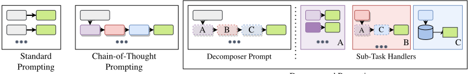
借用软件工程的类比，分解器通过调用更简单的子任务函数的接口来定义复杂任务的顶层程序。子任务处理器充当这些更简单函数的模块化、可调试且可升级的实现，类似于软件库。如果某个特定的子任务处理器（例如用于识别第 k 个字母或检索文档的处理器）表现不够好，我们可以单独调试该处理器，尝试其他提示或实现方式，并将改进后的模块无缝地重新接入整个系统，以此作为一种系统化的方式来尝试提升复杂最终任务的性能。
与先前工作相比，这种方法具有若干优势（如图中所示）。与复杂任务提示（任务 A）所需的特定示例相比，可以为各子任务处理器展示更广泛、更丰富的（较简单任务的）示例集。如果某个子任务过于复杂，可以将其进一步分解为更简单的子任务（任务 B）。与软件库类似，这些子任务处理器可以在多个任务之间共享；例如，此处任务 A 和 C 在任务 B 的模型中被复用。如上所述，可以轻松地将某个子任务处理器替换为改进后的实现，而无需对系统的其余部分做任何更改。对于更适合非神经网络方法的任务，甚至可以将基于少样本提示的大语言模型（LLM）替换为符号系统；例如，任务 C 使用诸如 Elasticsearch 之类的符号检索系统，该系统能够处理超大规模语料库。最后，我们甚至只需添加一个作为后处理步骤的纠错子任务处理器，就能改进先前的工作。
为了说明 DECOMP 的这些优势，我们使用 GPT3 模型在八个具有挑战性的数据集上将其与先前工作进行了实证评估：（1）在拼接第 k 个字母的任务上，我们表明，将各子任务单独分解出来的方法使我们能够更有效地教授提取第 k 个字母这一子问题（具体而言，是将其分解为更加容易的子任务）。（2）在列表反转任务上，我们表明，DECOMP 使我们能够扩展较弱模型的能力，并通过递归地将任务分解为对越来越短的列表的反转，构建一个尺度不变的系统。（3）在长上下文问答（QA）任务上（Khot et al., 2022），我们的方法使每个子任务处理器能够容纳比思维链（CoT）提示下可行的更多示例，从而带来更好的问答性能。（4）在三个多跳开放域问答数据集（Yang et al., 2018; Ho et al., 2020; Trivedi et al., 2022）上，我们可以将符号检索（ElasticSearch）API 作为检索子任务的处理器纳入其中，从而取得优于 CoT 的结果。（5）在两个数学问答数据集（Cobbe et al., 2021; Roy & Roth, 2015）上，我们可以对 CoT 的输出进行后处理，轻松修复频繁出现的格式错误，从而带来高达 14-17 分的惊人提升。
面向多步推理的少样本提示 大规模语言模型（LLMs）已被证明，仅凭少量示例作为提示即可学习各种自然语言处理（NLP）任务 (Brown et al., 2020)。最近，通过提供得出答案所需的中间推理步骤，即思维链（CoT）(Wei et al., 2022; Chowdhery et al., 2022)，它们也被成功应用于各种多步推理任务。另一种方法是将多个 LLM 组合起来，或将 LLM 与符号函数组合起来执行多步推理 (Jung et al., 2022; Creswell et al., 2023;
2
Press et al., 2022; Parisi et al., 2022; Gao et al., 2022; Schick et al., 2023, inter alia)。我们将这些先前的工作视为具有预定义分解结构的专用系统。
与我们方法最接近的工作是 least-to-most prompting（由易到难提示）(Zhou et al., 2023) 和 successive prompting（逐次提示）(Dua et al., 2022) 的思路：使用一个提示/模型来生成回答复杂问题所需的子问题，再由第二个提示/模型依次回答这些子问题。相比之下，我们的方法允许多样化的分解结构，包括递归和其他非线性分解结构。例如，根据定义，least-to-most 按从最易到最难的顺序提问，并要求 LLM 最终回答完整的问题（即 least-to-most 中的 'most'），而我们没有这样的限制。此外，我们基于先前的答案迭代地生成新问题（类似于 successive prompting），并且可以显式地为每个子问题分配不同的提示或符号系统来作答。
面向多步推理的模块化方法 我们的工作延续了 NLP 中关于神经模块化建模架构的长期文献 (Andreas et al., 2016; Talmor & Berant, 2018; Min et al., 2019; Jiang & Bansal, 2019; Gupta et al., 2020; Perez et al., 2020; Khot et al., 2021; Levine et al., 2022)，这些架构被用于问答及其他任务。我们特别受到 Khot et al. (2021) 的 Text Modular Networks 方法的启发：该方法的问题分解由一个学习得到的下一问题生成器构成，该生成器经过训练，能够以一组文本和符号 Agent 的语言来生成问题。在推理过程中，使用最佳优先搜索策略来探索可能的分解空间。与这项主要围绕在给定现有 Agent 的情况下对下一问题生成器进行监督训练的工作不同，我们利用少样本 LLM 的强大能力及其近期的成功，来同时构建分解器以及最契合理想分解的子任务 Agent。这样做的好处是免除了对专门监督训练数据的需求，而这些数据并非对所有子任务都总是可获得——这正是先前这项工作的一个关键瓶颈。
与传统的少样本提示（few-shot prompting）一样，其目标是教会 LLM 利用一小组上下文示例（in-context examples）D = { E 1 , ..., E | D | } 来为查询 Q 找到答案 A。答案 A 从底层分布 p ( A | Q,D,θ ) 中获得 (Dohan et al., 2022)。在最基本的少样本设置中，示例的形式为 E j = ( Q j , A j ) 。而在思维链（chain-of-thought, CoT）风格的提示中，目标是通过先生成一个由中间推理步骤或“思考”组成的序列或链 T ，再基于 T 推导出最终答案，从而得到答案。为了教会这种能力，需要使用更复杂的上下文示例，其形式为 E j = ( Q j , ( T j, 1 , . . . , T j,k ) , A j ) 。
在 DECOMP 中，核心是一个分解器 LLM，它试图通过为复杂任务生成一个提示程序 P 来求解该任务。P 的每一步都会将一个更简单的子查询导向系统可用的辅助子任务函数集合 F 中的某个函数。给定答案为 A 的查询 Q，程序 P 是形如 ( ( f 1 , Q 1 , A 1 ) , ..., ( f k , Q k , A k ) ) 的序列，其中 A k 是 P 所预测的最终答案，Q i 是导向子任务函数 f i ∈ F 的子查询。P 由一个高级命令式控制器（high-level imperative controller）执行，该控制器在分解器与子任务处理器（sub-task handler）之间传递输入与输出，直到满足 P 中的停止条件并获得最终输出。
为了以少样本提示的方式教会分解器 LLM，我们使用形式为 E j = ( ( Q j , ( f j, 1 , Q j, 1 , A j, 1 ) , ..., ( f j,k j , Q j,k j , A j,k j ) )) 的上下文示例，其中 A j,k j = A j 是 Q j 的最终答案，而 ( Q j, 1 , . . . , Q j,k j ) 是 Q j 的一个分解。每个子任务函数 f 反过来又通过一个子任务处理器被实现为一个上下文提示 LLM（例如，一个独立的 CoT 风格提示，或一个专用于该子任务的额外提示程序），或任何其他符号式或学习得到的函数（例如，计算器或专门监督训练的模型）。
为了通过一个例子来说明这一点，考虑这样一个多步骤任务，例如“使用空格连接 str 中每个单词的首字母”。我们可以将该任务分解为三个简单子任务组成的序列来求解：1) 收集 str 中的单词列表；2) 对每个单词，提取第三个字母；3) 以空格作为分隔符连接提取出的字母。图 2 展示了该任务的一个分解提示示例。与传统结构化程序非常类似，顶层 decomp 提示使用三个子任务函数提供了一个示例程序 E j：f 1 : split，用于拆分输入字符串中的单词；f 2 : str pos，用于查找字符串中的字符位置；f 3 : merge，用于连接字符。在这种情况下，我们将每个子任务函数实现为一个独立的上下文提示（例如，在右侧对 split 和 merge 使用标准提示方法），每个提示都包含一组独立于原始复杂任务的上下文示例。
3
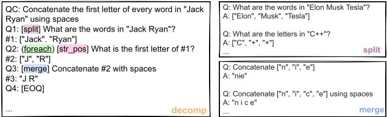
除了上述三个函数之外，还包含额外的控制结构，例如遍历数组的符号函数 foreach，以及对先前答案的引用（如 #1）。我们注意到，这样的辅助函数并非严格必需（例如，我们可以直接生成 'Q2'：'Jack 的首字母是什么？' 和 'Q3'：'Ryan 的首字母是什么？' 来代替图中的 Q2），添加它是为了减少指定分解所需的人工工作量，同时减少分解过程中的潜在错误。在我们的实验中，我们使用了 Khot et al. (2022) 所定义的组合算子中的两个（详见附录），尽管它也能够使用其全部算子（这些算子还涵盖了 Wolfson et al. (2020) 的 QDMR 算子）。
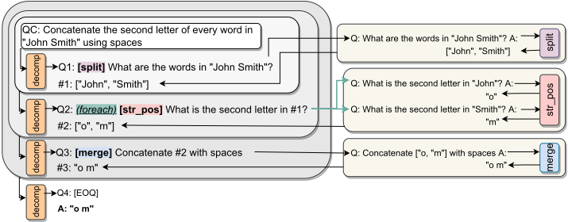
给定一个新问题和一组背景上下文示例（in-context examples）D，推理（即程序的构建与执行）过程如图 3 所示。新的复杂问题被送入分解器提示（decomposer prompt），以得到将要询问拆分提示（split prompt）的第一个子问题。在我们的符号控制器（symbolic controller）的帮助下，由该提示生成的答案随后被追加到分解器提示中，以得到第二个子问题 Q2。由于生成的问题中包含 foreach 算子，Q2 会产生两个问题（#1 中的每个单词各对应一个问题），它们被送入 strpos 提示。这些答案被组合成一个数组，从而得到答案 #2。整个分解历史被用于生成 Q3，并被传递给合并提示（merge prompt）以得到最终答案。由于任务已经解决，分解提示会生成特殊的序列结束标记（[EOQ]），最后一个答案即作为最终答案返回。形式化地说，执行推理涉及为一个新的查询 Q 找到最佳答案 A，其最简单的形式是利用大语言模型（LLM）对 A 的预测分布来计算最大后验（MAP）答案，即 Â = arg max_A p(A | D, Q, θ) (Dohan et al., 2022)。出于实用性考虑，在我们的实验中，此类计算采用贪心搜索（greedy search）来近似。
层次化分解（Hierarchical Decomposition） 某些子任务即使提供大量示例，也无法通过少样本提示（few-shot prompting）求解。例如，我们发现对 GPT3 text-davinci-002 模型而言，识别字符串中的第 k 个字母就颇具挑战性。在这种情况下，我们可以对该子任务提示做进一步分解：先识别出各个字母及其位置，再从该数组中选取第 k 个元素（见图 4）。在我们的框架中还可以复用已有的子任务提示。例如，split 提示便可以复用，因为它是为字符串切分这一通用任务而开发的。2
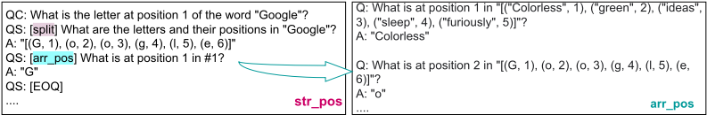
递归分解（Recursive Decomposition） 有些问题可以自然地分解为一个或多个同形式的更小问题。归并排序（merge sort）等递归算法正是利用这一思想，借助描述简洁的方法高效求解大规模问题。我们在 DECOMP 中应用了同样的原则，允许 decomposer 提示递归地调用自身，图 5 以列表反转任务为例展示了这一点。通过使用递归，我们能够将任何基础提示方法（此图中为思维链 CoT）泛化到长得多的列表：将输入不断切分为越来越小的列表，直至达到模型具有很高准确率的列表长度。此类递归方法无法用 CoT 和标准提示等现有方法来描述。由易到难提示（Least-to-most prompting）(Zhou et al., 2023) 也提出了类似的解决方案，但在两个关键方面有所不同：(a) 它必须一次性识别出所有子问题，而非我们这种迭代的自顶向下分解；(b) 它必须学习从先前的解答中识别出相关答案，而这一点通过我们的分解即可免费获得。
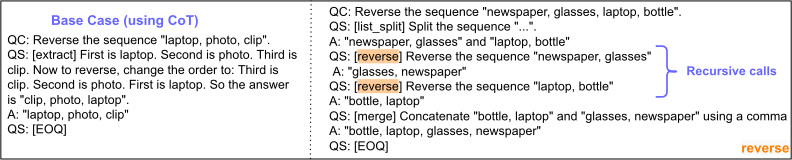
外部 API 调用（External API Calls） 在某些情况下，子任务可能无法仅靠 LLM 求解，例如从知识库（KB）或大型语料库中检索知识。不过，这类子任务可以借助现有系统轻松解决，例如使用 Elasticsearch 索引来检索文档，或使用 Google 搜索来检索网页（Lazaridou et al., 2022）。图 6 展示了 DECOMP 如何轻松利用此类系统来检索相关文档并回答单跳开放域问题。
2 附录 G 包含完整的 split 提示，其中含有诸如“Q: What are the letters and their positions in 'Mathison'?”之类问题的示例。
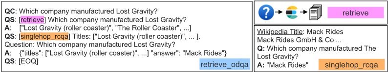
我们通过四个任务展示 DECOMP 的优势；其中两个是与 Wei et al. (2022) 所研究的任务类似的符号操作任务，另外两个是现有的文本多跳推理任务。除非另有说明，我们遵循先前工作，使用 text-davinci-002 InstructGPT3 模型（Ouyang et al., 2022）作为大语言模型（LLM），并报告精确匹配（Exact Match, EM）数值。对于与顺序无关的列表答案，我们将集合相等性作为 EM 进行评估。我们将我们的方法与思维链（CoT）进行比较，而非与先前工作中使用的每种特定分解结构进行比较。我们所有任务的完整提示见附录 G。
我们针对第 k 个位置的字母拼接任务，将 DECOMP 与思维链（CoT）提示进行比较。所有提示均包含对由 3 个单词组成的字符串中第 1、第 4 以及最后一个位置的字母进行拼接的示例。遵循 Perez et al. (2021) 的做法，我们为所有基线方法创建了三个不同的提示，并报告其平均值，以考虑示例选择所带来的方差。在分解提示中，我们使用 decomp、split、str pos（如图 4 所示进一步分解）以及 merge 提示。我们将先前工作（Wei et al., 2022）中用于最后一个字母拼接的 CoT 改编用于本任务，如下所示。此外，我们还考虑了将我们的分解提示展开为 CoT 的版本，即把整个分解过程（识别单词、将每个单词拆分为字母、取出第 k 个字母并进行拼接）描述为单个 CoT。例如，对于问题 'Take the letters at position 4 of the words in 'Herbert Alexander Simon' and concatenate them using a space.'，我们使用如下 CoT：
'Herbert' 的第 4 个位置的字母是 'b'。'Alexander' 的第 4 个位置的字母是 'x'。'Simon' 的第 4 个位置的字母是 'o'。使用空格拼接 'b'、'x'、'o' 得到 'b x o'。因此，'Herbert Alexander Simon' 输出 'b x o'。...
'Herbert Alexander Simon' 中的单词是 'Herbert'、'Alexander' 和 'Simon'。'Herbert' 中的字母及其位置为 '[(H, 1), (e, 2), (r, 3), (b, 4), (e, 5), (r, 6), (t, 7)]'。该序列中第 4 个位置的字母是 'b'。· · · 输出 'b x o'。...
我们以类似的方式对由易到难提示（least-to-most prompt，Zhou et al., 2023）进行了调整，使其包含 rollout（参见附录 G）。我们在 4 个数据集上比较这四种提示技术，以从 3 个维度评估泛化能力：(1) 新的字母位置 k = 3；³ (2) 更长的输入，#words=4 和 5；(3) 新的分隔符 ';'。测试示例中的单词来自一份最流行的名字与姓氏列表。⁴ 所有评估数据集均包含 100 个示例。我们在图 7 中展示了以空格作为分隔符、并在三个提示上取平均的结果。⁵
即使提示采用了与 rollout 后的分解相同的推理过程，DECOMP 的表现仍优于思维链（chain-of-thought, CoT）和由易到难提示。这表明，在教授困难子任务方面，分离的提示比单个 CoT 提示更为有效。
DECOMP 能够完美地泛化到更长的序列。随着输入序列长度的增加，我们的方法在该任务上仍能持续取得接近 100% 的准确率。⁶ 基于 CoT 的方法在输入长度变长时得分明显下降，性能差距随之扩大。
3 注意，所有子任务提示中均不包含针对该位置的示例。
4 forebears.io/earth/forenames 和 forebears.io/earth/surnames
5 使用分号时我们得到了类似的结果，见附录中的图 22。
6 注意，我们也为 DECOMP 报告了聚合指标，但此处标准差为零。
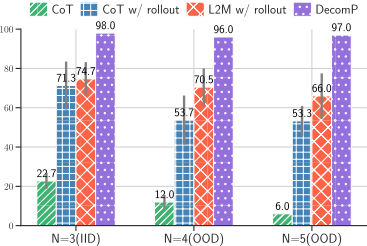
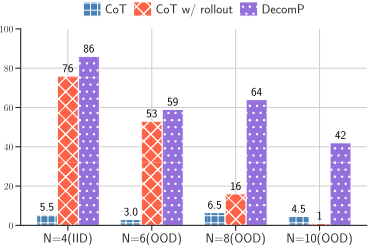
我们使用反转单词列表的任务7来展示递归式 DECOMP 如何实现长度泛化。我们改编了 Wei et al. (2022) 中相关的思维链（CoT）提示，并将其整合到分解式提示中。作为对照，我们还与我们的分解式提示的 CoT 展开版本（w/ rollout）进行了比较。所有提示均包含相同的 3 个对含 3-5 个词项的单词序列进行反转的示例。我们评估了所有提示向 4、6、8 和 10 个词项序列的泛化能力。这里我们使用 davinci-001 来表明 DECOMP 能够使较弱的模型接近 davinci-002 的性能（后者确实能解决该任务）。我们使用图 5 中的策略，并在附录 G 中给出我们的提示。图 8 展示了各提示策略在不同输入长度上的结果。
DECOMP 提升了少样本提示的长度泛化能力。虽然我们的基础 CoT 提示完全无法泛化到更长的序列，但我们的方法能够递归地分解该问题，从而实现更好的长度泛化。此外，我们分解策略的 CoT 版本之所以失败，是因为在无法将子模块抽象化的情况下，展开后的提示变得过长且繁复。
接下来，我们在阅读理解设置下对 CommaQA-E 数据集（Khot et al., 2022）进行评估。该数据集由合成生成的实体（例如 Erowid award）、事实（例如“Wetherality 曾是电影 Dewbar 中的一名演员。”）以及多跳问题（例如“出演 Erowid 获奖电影的演员们获得过哪些奖项？”）组成。由于存在大量干扰项并因此导致上下文更长，已有研究表明该数据集对标准语言模型（LM）而言非常困难，即使经过微调也是如此。
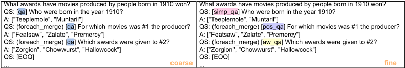
为了使这些问题能够放入 GPT3 的上下文限制（2049 个 token）之内，我们生成了 CommaQA-E 数据集及组合泛化（compositional generalization）划分的一个更小版本，使得我们能够在 CoT 提示的上下文中至少容纳四个示例。CoT 提示描述了为得出答案所需的事实序列（所有提示见附录 G）。
7 我们使用来自 Wei et al. (2022) 的词汇表：https://www.vocabulary.com/lists/189583
对于 DECOMP，我们可以将分解这一任务（独立于上下文）与单跳问答（QA）的各子任务分离开来。如图 9 所示，我们在分解器（decomposer）提示中给出与上下文无关的分解示例，并使用单独的子任务提示来教授在给定上下文上进行 QA 的技能。此外，我们可以选择分解的粒度，从而在人力投入与准确率提升之间进行权衡。例如，我们既可以用单个 QA 提示来处理所有问题，也可以为不同类别的问题创建各自的 QA 提示。在我们的实验中，每个子任务提示包含 8 个 QA 示例（每段 2 个问题）。我们评估了三种不同的提示，并在图 10 中报告平均结果。
我们针对 CommaQA 得出三点观察。无论分解的粒度如何，也无论采用哪个评估划分，DECOMP 都比 CoT 更准确。更细粒度的分解可以
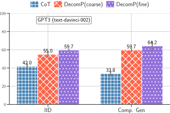
通过为每类问题提供更多示例来帮助提升任务性能，而这反过来又提高了单跳 QA 的准确率。DECOMP 能够泛化到新的组合，例如 CommaQA 的组合泛化划分，该划分在训练集中所观察到的关系的未见组合上对模型进行测试。虽然 CoT 的分数有所下降，但两种基于分解的方法实际上都获得了小幅提升（该划分所使用的关系子集对我们的 QA 模型而言更容易）。
接下来，我们在开放域多跳问答任务上展示本方法集成外部 API 调用的能力。我们在三个数据集上评估本方法：(1) 2WikiMultihopQA (Ho et al., 2020) (2) MuSiQue (Trivedi et al., 2022) (3) HotpotQA (Yang et al., 2018)。我们在附录 A 中更详细地描述这些数据集的开放域版本。我们在此使用 Codex (code-davinci-002) 模型，因为它能够容纳所需的长得多的上下文。我们还通过使用 Flan-T5 系列的模型来评估模型规模对 DECOMP 的影响：Flan-T5-Large (0.7B)、Flan-T5-XL (3B) 和 Flan-T5-XXL (11B)。8
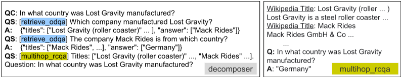
图 11 展示了我们所使用的分解提示。分解器生成（单跳）子问题，并将其委派给 retrieve odqa（在图 6 中描述）。如前文所示，该模块先检索相关文档，然后使用 RC 模型进行回答。retrieve odqa 同时返回答案和文档，使得后续子问题可以使用答案（例如 "Mack Rides"），而 multihop rcqa 模型可以使用这些文档。最终的 multihop rcqa 模型在给定 K 个段落的情况下，被提示直接生成答案或使用 CoT 生成答案。
8 在分解时我们仍然使用 GPT3 规模的模型，因为只有这些模型能够可靠地生成所需的结构化输出。
我们将本方法与两个基线进行比较：A. No Context (No-Ctxt)，一种闭卷设置基线，其中模型必须仅依赖其参数化知识；B. NoDecomp Context (NoDecomp-Ctxt)，一种简单的检索基线，其中我们以多跳问题作为输入检索 K 个段落并将其用作上下文。对于 NoDecomp-Ctxt 和 Decomp-Ctxt，K 均通过超参数调优来选择（附录 A）。我们为 20 个训练集问题人工标注了 CoT 和分解，并为所有方法各采样 3 个提示，每个提示包含 15 个问题。详细提示见附录 G。我们在每个数据集的 300 个留出的开发集问题上进行评估。
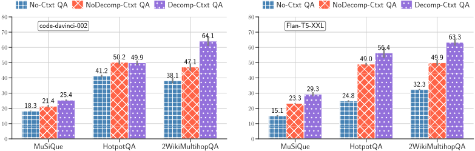
我们在图 12 中展示了在所有三个数据集上使用直接 QA 提示的结果，其他结果见附录 A。Decomp-Ctxt 模型在所有设置中的表现都显著优于 No-Ctxt 模型，这表明可以利用外部知识来提升少样本模型在开放域多跳问答上的表现。此外，我们表明我们的 Decomp-Ctxt 模型在除一种设置（Codex 在 HotpotQA 上）之外的所有设置中均优于强检索基线（NoDecomp-Ctxt）。最后，我们表明，即使使用规模小得多的 Flan-T5-XXL 模型，Decomp-Ctxt 也优于所有基线，甚至能够取得与仅使用 Codex 的系统相当的分数。
用于错误纠正的思维链（CoT）后处理 DECOMP 还允许我们创建有针对性的子任务处理器，以聚焦于任何系统中的错误来源。例如，用于算术推理的 CoT 通常依赖模式（answer is .*）来提取答案，但 CoT 并不总是符合该模式。相反，我们可以将答案提取分配给一个更好的子任务处理器（GPT3），从而减少这类错误。与 CoT 提示相比，这使得 MultiArith 上的成绩提升了 17 个百分点（78 → 95），GSM8K 上的成绩提升了 14 个百分点（36 → 50.6）（详见附录 B）。
尽管 DECOMP 在总体上优于各基线，我们还观察到 DECOMP 的增益在不同的提示选择（见附录 D）和分解方案（见附录 E）之间保持一致。
我们提出了一种新方法——分解提示（Decomposed Prompting），它通过将复杂任务分解为由更简单的子任务构成的提示程序（prompting program），从而利用少样本提示（few-shot prompts）来解决复杂任务。受软件库的启发，我们的分解器（decomposer）和共享子任务采用模块化方式进行设计：它们各自使用自己的少样本提示，从而允许我们独立地优化每个提示、在必要时将某个子任务进一步分解，甚至可以无缝地用符号系统将其替换。我们证明了 Decomposed Prompting 在四个不同的任务和泛化设置上均优于先前的工作，从而确立了它作为解决复杂任务的有效少样本范式的地位。
9 答案 F1 的计算方式是将预测答案和标准答案（ground truth answer）视为词袋（bags of tokens），并计算二者的精确率（precision）与召回率（recall）（Rajpurkar et al., 2016）。详情参见 HotpotQA（Yang et al., 2018）。
我们在 fullwiki 设置下使用 HotpotQA，该设置自带用于开放域问答（open-domain QA）的关联 Wikipedia 语料库。然而，2WikiMultihopQA 和 MuSiQue 最初是阅读理解数据集。2WikiMultihopQA 和 MuSiQue 中的问题分别关联 10 个和 20 个段落。为了将这些数据集转换为开放域问答数据集，我们通过合并训练集（train）、开发集（dev）和测试集（test）问题中的所有段落，为每个数据集构建了一个语料库。最终，我们得到 2WikiMultihopQA 的语料库规模为 430,225 个段落，MuSiQue 的为 139,416 个段落。
我们将 NoDecomp-Ctxt 和 Decomp-Ctxt 模型中待检索的段落数量（K）视为一个超参数。我们通过在一组取值上进行网格搜索来选择该超参数，以在每个数据集由 100 个问题组成的留出集上最大化性能。对于 NoDecomp-Ctxt，我们在 GPT3 模型上搜索 K ∈ { 6 , 8 , 10 }，在 Flan-T5-* 模型上搜索 K ∈ 2 , 4 , 6 , 8。对于 Decomp-Ctxt，我们在 GPT3 和 Flan-T5-* 模型上搜索 K ∈ { 2 , 4 , 6 }。请注意，GPT3 与 Flan-T5-* 之间的搜索范围有所不同，因为 GPT3 能够容纳更多的 token 数量。NoDecomp-Ctxt 与 Decomp-Ctxt 的搜索范围也有所不同，因为 K 指的是每一轮检索中所检索的段落数量，而 NoDecomp-Ctxt 只有一个检索步骤，而 Decomp-Ctxt 通常包含多个检索步骤。
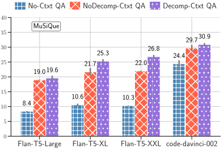
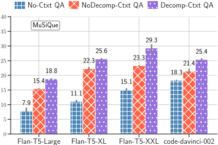
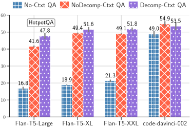
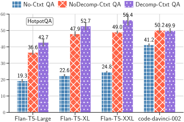
13
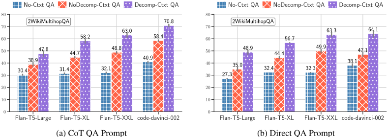
We present all the results on the MuSiQue dataset in Fig. 13. Across all settings, we can see that retrieval helps substantially (large gains over No-Ctxt QA) with further improvements achieved by our DecomP-based Decomp-Ctxt QA model.
我们在图 14 中展示了 HotpotQA 数据集上的所有结果。在该数据集上，我们同样可以看到引入检索带来了大幅提升，但使用 DecomP 所带来的收益主要体现在较小的模型中。
我们在图 15 中展示了 2WikiMultihopQA 数据集上的所有结果。在该数据集上，我们可以看到引入检索带来了大幅提升，同时观察到引入 DecomP（与 NoDecomp-Ctxt 相比）也带来了显著提升。
我们将 Decomposed Prompting 应用于两个数学问答数据集：GSM8K Cobbe et al. (2021) 和 MultiArith Roy & Roth (2015)。对于思维链（Chain-of-thought, CoT），我们使用了 Wei et al. (2022) 中用于数学推理的原始提示。例如：
问：树林里有 15 棵树。树林工人今天将在树林里种树。他们完成之后，将会有 21 棵树。树林工人今天种了多少棵树？答：最初有 15 棵树。后来又种了一些树，于是有了 21 棵树。所以必定是 21 - 15 = 6。答案是 6。
大多数 CoT 系统 Wei et al. (2022); Wang et al. (2023) 依赖于通过查找 'answer is' 后面的数字来提取答案。然而，这并不总是准确的。例如，下面这段思维链若依赖简单模式将无法得出答案。
Parker 每天嚼 4 块口香糖。一包口香糖有 15 块。因此，他需要 4 * 30 / 15 = 8 包口香糖才够他嚼 30 天。
与其依赖泛化能力有限的模式，我们可以使用语言模型来更可靠地提取答案。具体而言，我们使用 Decomposed Prompting 将任务分解为：首先识别思维链推理，然后使用第二个基于 GPT3 的子模块从 CoT 中提取答案。我们在此展示提示的示例（完整提示见附录 G）：
QC: 树林里原有 15 棵树。园林工人今天要在树林里种树。等他们种完之后，树林里将有 21 棵树。园林工人今天种了多少棵树？
QS: [cot] 树林里原有 15 棵树。园林工人今天要在树林里种树。等他们种完之后，树林里将有 21 棵树。园林工人今天种了多少棵树？
A: 原来有 15 棵树。后来又种了一些树，变成了 21 棵。所以一定是种了 21 - 15 = 6 棵树。
QS: [gpt ans] 原来有 15 棵树。后来又种了一些树，变成了 21 棵。所以一定是种了 21 - 15 = 6 棵树。
Q: 原来有 15 棵树。后来又种了一些树，变成了 21 棵。所以一定是种了 21 - 15 = 6 棵树。A: 6
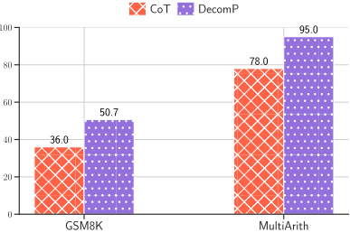
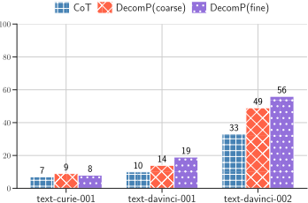
我们在图 16 中展示了我们的结果。在 GSM8K 数据集 10 上，我们的性能超出思维链（CoT）14 个百分点。在 MultiArith 数据集 11 上，我们相比 CoT 取得了 17 个百分点的提升。虽然这只是一个简单的改动，但它说明了使用 DECOMP 处理其他复杂答案类型的可能性，例如从思维链中进行非抽取式答案生成。
我们在 CommAQA 数据集上评估了 text-curie-001、text-davinci-001 和 text-davinci-002。由于 curie-001 和 davinci-001 的上下文窗口较小，我们进一步缩减了提示，使其能够适应它们的上下文窗口（2048 个 token）。如图 17 所示，CoT 和 DECOMP 均受模型规模的影响。
我们在图 18 中展示了字母拼接任务（以空格为分隔符）在不同 N 取值下的结果。我们的结果在不同的提示（P1、P2 和 P3）下均保持稳定，并且始终优于 CoT 和 Least-to-Most 提示。
10 由于 API 使用的成本，我们从测试集中随机抽取了 300 个样本
11 由于 API 使用的成本，我们从测试集中随机抽取了 200 个样本
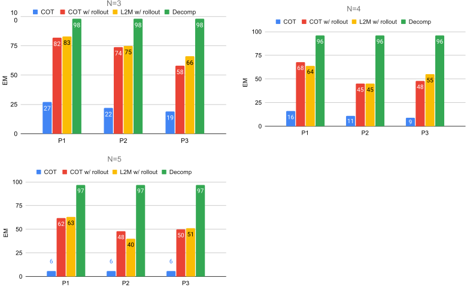
我们还在图 19 中展示了所有提示在 CommAQA 数据集上的结果。同样地，我们可以观察到 DECOMP 在每个提示集上都优于 CoT。
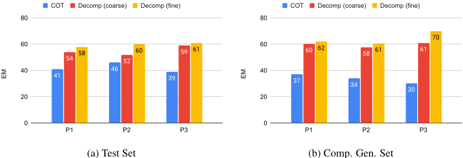
为了评估分解方案的影响，我们针对字母拼接和反转任务实验了另外两种简单的分解结构。
字母拼接 对于字母拼接，我们考虑一种替代方案，即使用 GPT3 生成每个问题，而不是循环遍历答案，例如，通过使用分解器提示模型来生成子问题，我们可以对输出答案中的格式问题更加鲁棒，例如，即使第一个答案不是有效数组，我们也可以预期 GPT3 仍会生成相应的子问题。然而，生成的子问题可能无法正确使用列表中的所有元素（顺序改变、遗漏元素、重复元素等）。
| 0 |
|---|
| QC: Take the last letters of the words in 'Augusta Ada King' and concatenate them using a space. QS: [split] What are the words in 'Augusta Ada King'? A: ['Augusta', 'Ada', 'King'] |
| QS: [str position] What is the last letter in 'Augusta'? A: 'a' |
| QS: [str position] What is the last letter in 'Ada'? A: 'a' |
| QS: [str position] What is the last letter in 'King'? A: 'g' |
| QS: [merge] Concatenate ['a', 'a', 'g'] using a space. A: 'a a g' QS: [EOQ] |
| 0 |
列表反转 对于列表反转，我们不再将列表对半拆分，而是取列表的尾部，将其反转后再拼接到头部，即 reverse(list) = reverse(list[1:]) + list[0]。与将列表对半拆分的原始方法（O(log(n))）相比，这需要更多的 GPT3 调用（O(n)）。
在这两种情况下，我们注意到性能并未下降，如图 20 和图 21 所示。在字母拼接任务上，结果完全相同。新的反转分解方案在较长输入上实际上更强，但代价是需要更多次调用 GPT3（使用二分拆分为 O(ln(n))，而每次处理一个元素为 O(n)）。这两种分解方案仍然优于 CoT。
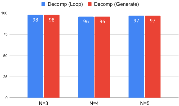
我们分析了 DECOMP 在字母拼接任务上的错误，发现错误仅出现在子任务执行中。
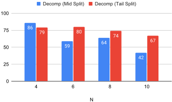
17
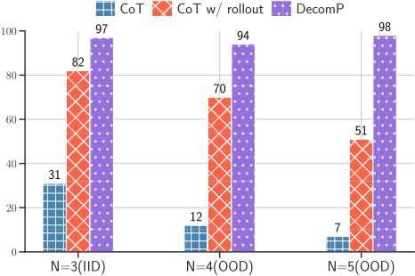
A: n m b u n
A: l e o i e
预测：leoie
我们分析了 CoT 在字母拼接任务上的错误，发现在 CoT 的生成过程中存在类似的错误。但这些错误的出现频率高于 DECOMP，因为使用 CoT 无法有效地教授每个子任务。
A: o i k t n
预测：o l k t i
18
在 CommaQA 中也是如此，错误大多源于子任务错误，在该数据集中这些子任务错误对应于回答单跳问题。CoT 也会犯相同类型的错误，但由于这一问答（QA）子任务无法在 CoT 中委托给专门的提示，因此这类错误出现得更为频繁。由于所有错误都属于这种类型，我们在此仅展示一个示例。
Q: 1933年出生的人所写的电影获得了哪些奖项？A: ['Hydrallium', 'Pompasole'] 预测：['Pompasole'] 错误：子问题答案不正确 子问题：Haldron 写过哪些电影？子答案：['Polytetrafluoromethane', 'Skia', 'Warpstone'] 预测：['Skia', 'Warpstone']
我们提供了 COT 和我们的 Decomposed Prompting 方法在所有数据集上使用的任务提示。
CoT 由于 CoT 方法同样执行两步推理：第一步生成思维链（chain-of-thought），第二步从 CoT 中提取答案，因此我们对 COT 基线也使用相同的基于分解的框架。例如，考虑我们 COT 提示中的以下示例：
QC: 取 'Alan Mathison Turing' 中各单词位置 1 处的字母，并用空格将它们连接起来。
QS: [extract] 'Alan' 位置 1 处的字母是 'A'。'Mathison' 位置 1 处的字母是 'M'。'Turing' 位置 1 处的字母是 'T'。用空格连接 'A'、'M'、'T' 得到 'A M T'。因此，'Alan Mathison Turing' 输出 'A M T'。A: 'A M T' QS: [EOQ]
GPT3 在 'decomposition' 步骤中生成思维链，然后由基于正则表达式的答案提取器 extract ( '.* outputs "(.*)" \ .' ) 接收该 CoT 并生成答案。在某些情况下，提示中会省略模块名称（默认将 CoT 发送给提取器）。
算子 在本工作中，我们使用与 Khot et al. 所定义相同的算子。他们的 select 算子只是将答案索引的引用替换为其对应答案的基本算子。在未指定时，select 被假定为默认算子。此外，我们在实验中还考虑了两个算子：project values 和 project values flat unique。
我们在此展示实验中使用的其中一个提示。完整的提示集合作为补充材料提供。
QC: 取 'Augusta Ada King' 中各单词的最后一个字母，并用空格将它们连接起来。QS: [split] 'Augusta Ada King' 中有哪些单词？A: ['Augusta', 'Ada', 'King'] QS: (project values) [str position] '#1' 中的最后一个字母是什么？A: ['a', 'a', 'g'] QS: [merge] 用空格连接 #2。A: 'a a g' QS: [EOQ] QC: 取 'Alan Mathison Turing' 中各单词位于位置 1 的字母，并用空格将它们连接起来。QS: [split] 'Alan Mathison Turing' 中有哪些单词？A: ['Alan', 'Mathison', 'Turing'] QS: (project values) [str position] '#1' 中位置 1 处的字母是什么？A: ['A', 'M', 'T'] QS: [merge] 用空格连接 #2。A: 'A M T' QS: [EOQ] QC: 取 'Herbert Alexander Simon' 中各单词位于位置 4 的字母，并用空格将它们连接起来。QS: [split] 'Herbert Alexander Simon' 中有哪些单词？A: ['Herbert', 'Alexander', 'Simon'] QS: (project values) [str position] '#1' 中位置 4 处的字母是什么？A: ['b', 'x', 'o'] QS: [merge] 用空格连接 #2。A: 'b x o' QS: [EOQ] split Q: 'Alan Mathison Turing' 中有哪些单词？A: ['Alan', 'Mathison', 'Turing'] Q: 'Alan' 中有哪些字母？A: ['A', 'l', 'a', 'n'] Q: 'Mathison' 中的字母及其位置是什么？A: '[(M, 1), (a, 2), (t, 3), (h, 4), (i, 5), (s, 6), (o, 7), (n, 8)]' Q: 'Herbert Alexander Simon' 中的单词及其位置是什么？A: '[(Herbert, 1), (Alexander, 2), (Simon, 3)]' str position QC: 单词 'Augusta' 中位置 1 处的字母是什么？QS: (select) [split] 'Augusta' 中的字母及其位置是什么？A: '[(A, 1), (u, 2), (g, 3), (u, 4), (s, 5), (t, 6), (a, 7)]' QS: (select) [arr position] #1 中位置 1 处是什么？A: 'A' QS: [EOQ] QC: 单词 'Mathison' 的最后一个字母是什么？QS: (select) [split] 'Mathison' 中的字母及其位置是什么？A: '[(M, 1), (a, 2), (t, 3), (h, 4), (i, 5), (s, 6), (o, 7), (n, 8)]' QS: (select) [arr position] #1 中的最后一个字母是什么？A: 'n'
QC: 'Colorless green ideas sleep furiously' 中位置 4 的单词是什么？
QS: (select) [split] 'Colorless green ideas sleep furiously ' 中的单词及其位置是什么？
A: '[(Colorless, 1), (green, 2), (ideas, 3), (sleep, 4), (furiously, 5)]'
QS: (select) [arr position] #1 中位置 4 处是什么？
A: 'Alan'
A: 'a,a,g'
21
QC: 取 'Augusta Ada King' 中各单词的最后一个字母，并用空格将它们连接起来。QS: 'Augusta' 的最后一个字母是 'a'。'Ada' 的最后一个字母是 'a'。'King' 的最后一个字母是 ' g'。用空格连接 'a'、'a'、'g' 得到 'a a g'。因此，'Augusta Ada King' 输出 'a a g'。
QC: 取 'Augusta Ada King' 中各单词的最后一个字母，并用空格将它们连接起来。QS: [l2m] 取 'Augusta Ada' 中各单词的最后一个字母，并用空格将它们连接起来。A: 'Augusta Ada' 中的单词是 'Augusta' 和 'Ada'。'Augusta' 中的字母及其位置为 '[(A, 1), (u, 2), (g, 3), (u, 4), (s, 5), (t, 6), (a, 7)]'。该序列中的最后一个字母是 'a'。'Ada' 中的字母及其位置为 '[(A, 1), (d, 2), (a, 3)]'。该序列中的最后一个字母是 'a'。用空格连接 'a'、'a' 得到 'a a'。因此，'Augusta Ada' 输出 'a a'。
QS: [ans ext] 因此，'Augusta Ada King' 输出 'a a g'。
QS: [ans ext] 因此，'Alan Mathison Turing' 输出 'A M T'。
QS: [ans ext] 因此，'Herbert Alexander Simon' 输出 'b x o'。
23
QC: 取出 'Augusta Ada King' 中各单词的最后一个字母，并用空格将它们连接起来。
QS: [split] 'Augusta Ada King' 中有哪些单词？A: ['Augusta', 'Ada', 'King']
QS: [str position] 'Augusta' 的最后一个字母是什么？A: 'a'
QS: [str position] 'Ada' 的最后一个字母是什么？A: 'a'
QS: [str position] 'King' 的最后一个字母是什么？A: 'g'
QS: [merge] 用空格连接 ['a', 'a', 'g']。A: 'a a g'
QS: [EOQ]
QC: 取出 'Alan Mathison Turing' 中各单词位于位置 1 的字母，并用空格将它们连接起来。
QS: [split] 'Alan Mathison Turing' 中有哪些单词？A: ['Alan', 'Mathison', 'Turing']
QS: [str position] 'Alan' 中位于位置 1 的字母是什么？A: 'A'
QS: [str position] 'Mathison' 中位于位置 1 的字母是什么？A: 'M'
QS: [str position] 'Turing' 中位于位置 1 的字母是什么？A: 'T'
24
QS: [merge] 用空格连接 ['A', 'M', 'T']。A: 'A M T'
QS: [EOQ]
QC: 取出 'Herbert Alexander Simon' 中各单词位于位置 4 的字母，并用空格将它们连接起来。
QS: [split] 'Herbert Alexander Simon' 中有哪些单词？A: ['Herbert', 'Alexander', 'Simon']
QS: [str position] 'Herbert' 中位于位置 4 的字母是什么？A: 'b'
QS: [str position] 'Alexander' 中位于位置 4 的字母是什么？A: 'x'
QS: [str position] 'Simon' 中位于位置 4 的字母是什么？A: 'o'
QS: [merge] 用空格连接 ['b', 'x', 'o']。A: 'b x o'
QS: [EOQ]
本节中的提示实现了算法 1。
算法 1 一种递归反转策略：将序列对半拆分，分别反转每一半，再将两者拼接起来。对语言模型（LM）的调用次数为 O(log n)，其中 n 为序列中元素的数量。
procedure SPLITREVERSE(x) ▷ x 的反转 if |x| < 4 then ▷ 基本情形 return x|x|, . . . , x1 ▷ 反转后的序列 else ▷ 归纳情形 n ← |x|/2 ▷ x 长度的一半 ℓ ← x1, . . . , xn ▷ x 的前一半 ℓR ← SPLITREVERSE(ℓ) ▷ 反转后的前一半 r ← xn+1, . . . , x|x| ▷ x 的后一半 rR ← SPLITREVERSE(r) ▷ 反转后的后一半 return rR1, . . . , rRn, ℓRn+1, . . . , ℓR|x| ▷ 拼接后的反转两半 end if end procedure
A: '1. driving license, 2. button'
A: '3. packet, 4. identity card, 5. shoe'
QS: [remove numbers] 从 #1 中移除数字。
A: 'driving license, button'
QS: [remove numbers] 从 #2 中移除数字。
A: 'packet, identity card, shoe'
QS: [reverse] 反转序列 #3。
A: 'button, driving license'
26
Q: 'mirror, case' 'toothbrush, alarm clock'.
A: 'mirror, case, toothbrush, alarm clock'
Q: 'light bulb, clip, umbrella' 'driving licence, watch'.
A: 'light bulb, clip, umbrella, driving licence, watch'
QS: 第一个是 laptop。第二个是 photo。第三个是 clip。现在进行反转，将顺序改为：第三个是 clip。第二个是 photo。第一个是 laptop。所以答案是 'clip, photo, laptop'。
A: 'pineapple, identity card, packet, button, driving license'
A: 'shoe, identity card, packet, button, driving license'
（2 个元素）是 '1. newspaper, 2. glasses'。序列的前半部分以 '2. glasses' 结尾，因此后半部分从 '2. glasses' 之后的 '3. laptop' 开始。完整序列长度为 4 个元素，前半部分长度为 2 个元素，因此后半部分的长度为 4 - 2 = 2 个元素。序列的后半部分（2 个元素）是 '3. laptop, 4. bottle'。从 '1. newspaper, 2. glasses' 中去掉编号，得到 'newspaper, glasses'。从 '3. laptop, 4. bottle' 中去掉编号，得到 'laptop, bottle'。反转序列 'newspaper, glasses'：第一个是 newspaper。第二个是 glasses。现在进行反转，将顺序改为：第二个是 glasses。第一个是 newspaper。所以答案是 'glasses, newspaper'。反转序列 'laptop, bottle'：第一个是 laptop。第二个是 bottle。现在进行反转，将顺序改为：第二个是 bottle。第一个是 laptop。所以答案是 'bottle, laptop'。将 'bottle, laptop' 与 'glasses, newspaper' 拼接起来，答案是 'bottle, laptop, glasses, newspaper'。
reverse (tail)
Q1: [extract] 序列为 '1. driving license, 2. button, 3. packet, 4. identity card, 5. shoe'。
序列长度为 5 个元素，大于最小长度 4，因此我们将其拆分。我们取序列中的第一个元素，即 '1. driving license'。
#1: '1. driving license'
Q2: [extract] 完整序列长度为 5 个元素，因此剩余序列的长度为 5 - 1 = 4 个元素。长度为 4 个元素的序列尾部是 '2. button, 3. packet, 4. identity card, 5. shoe'。
#2: '2. button, 3. packet, 4. identity card, 5. shoe'
#3: 'driving license'
#4: 'button, packet, identity card, shoe'
#5: 'shoe, identity card, packet, button'
#6: 'shoe, identity card, packet, button, driving license'
Q1: [extract] 序列为 '1. laptop, 2. photo, 3. clip'。序列长度为 3 个元素，小于最小长度 4，因此我们无需将其拆分。我们只需要反转 ' laptop, photo, clip'。
#1: 'laptop, photo, clip'
Q2: [cot] 反转序列 #1。
#2: 'clip, photo, laptop'
Q3: [EOQ]
#1: '1. newspaper'
Q2: [extract] 完整序列长度为 4 个元素，因此剩余序列的长度为 4 - 1 = 3 个元素。长度为 3 个元素的序列尾部是 '2. glasses, 3. laptop, 4. bottle'。
#2: '2. glasses, 3. laptop, 4. bottle'
#3: 'newspaper'
#4: 'glasses, laptop, bottle'
#5: 'bottle, laptop, glasses'
#6: 'bottle, laptop, glasses, newspaper'
28
我们在此展示用于 CommaQA 实验的其中一个提示。完整的提示集合作为补充材料提供。
由1910年出生的人制作的电影获得了哪些奖项？ QS: (select) [qa] 谁出生于1910年？ A: ['Teeplemole', 'Muntaril'] QS: (project values flat unique) [qa] #1 是哪些电影的制片人？ A: ['Featsaw', 'Zalate', 'Premercy'] QS: (project values flat unique) [qa] #2 获得了哪些奖项？ A: ['Zorgion', 'Chowwurst', 'Hallowcock'] QS: [EOQ] QC: 来自 Stridery 国家的人出演过哪些电影？ QS: (select) [qa] 谁来自 Stridery 国家？ A: ['Gastrat'] QS: (project values flat unique) [qa] #1 在哪些电影中担任过演员？ A: ['Partnershipmaker', 'Nilitude', 'Warpstone'] QS: [EOQ] QC: 获得 Erowid 奖的电影的演员们获得了哪些奖项？ QS: (select) [qa] 哪些电影被授予了 Erowid 奖？ A: ['Dewbar', 'Caudacite'] QS: (project values flat unique) [qa] 电影 #1 中的演员有哪些？ A: ['Wetherality', 'Lougeri` ere', 'Gigabut'] QS: (project values flat unique) [qa] #2 获得了哪些奖项？ A: ['Aniconder', 'Trifogation'] QS: [EOQ] QC: Modiparity 奖得主所导演的电影获得了哪些奖项？ QS: (select) [qa] 谁被授予了 Modiparity 奖？ A: ['Bioperatology'] QS: (project values flat unique) [qa] #1 导演了哪些电影？ A: ['Pestok', 'Vitrilateral'] QS: (project values flat unique) [qa] #2 获得了哪些奖项？ A: ['Gutney', 'Antipositive'] QS: [EOQ] QC: 由1935年出生的人编剧的电影获得了哪些奖项？ QS: (select) [qa] 谁出生于1935年？ A: ['Sclerocybin', 'Zayage'] QS: (project values flat unique) [qa] #1 编剧了哪些电影？ A: ['Noenometer', 'Tayenne', 'Pneumodendron'] QS: (project values flat unique) [qa] #2 获得了哪些奖项？ A: ['Brownbeard', 'Goosehead', 'Handt'] QS: [EOQ] QC: 来自 Legault 的导演们执导过哪些电影？ QS: (select) [qa] 谁来自 Legault 国家？ A: ['Metatoun', 'Sapien'] QS: (project values flat unique) [qa] #1 担任过哪些电影的导演？ A: ['Coacheship', 'Misapportionment'] QS: [EOQ]
29
qa
电影：Premercy；执导：Muntaril。电影：Skirtsicine；导演：Teeplemole。电影：Featsaw；执导：Monsterscar。电影：Zalate；导演：Monsterscar。电影：Zalate；获奖：Hallowcock。电影：Featsaw；获奖：Zorgion。电影：Premercy；奖项：Chowwurst。电影：Skirtsicine；奖项：Hallowcock。奖项：Goatfly；获奖者：Teeplemole。人物：Monsterscar；奖项：Glodome。人物：Muntaril；奖项：Goatfly。电影：Featsaw；上映年份：1973。电影：Zalate；上映年份：1964。电影：Skirtsicine；上映年份：1973。电影：Premercy；年份：1961。Teeplemole 是电影 Skirtsicine 中的一名演员。Muntaril 是电影 Skirtsicine 中的一名演员。Monsterscar 是电影 Premercy 中的一名演员。Muntaril 是电影 Featsaw 中的一名演员。Teeplemole 是电影 Zalate 中的一名演员。Muntaril 出生于 1910 年。Teeplemole 出生于 1910 年。Monsterscar 出生于 1942 年。Teeplemole 来自 Piperfish 国家。Monsterscar 来自 Piperfish 国家。Muntaril 来自 Clony 国家。Muntaril 与他人共同制作了电影 Skirtsicine。Monsterscar 是电影 Featsaw 的制片人之一。Monsterscar 与他人共同制作了电影 Premercy。Monsterscar 与他人共同制作了电影 Zalate。Teeplemole 是电影 Featsaw 的制片人之一。Teeplemole 与他人共同制作了电影 Zalate。Muntaril 与他人共同制作了电影 Premercy。Monsterscar 为电影 Premercy 撰写剧本。Muntaril 是电影 Zalate 的编剧之一。Muntaril 为电影 Featsaw 撰写剧本。Teeplemole 为电影 Featsaw 撰写剧本。Monsterscar 是电影 Zalate 的编剧之一。Teeplemole 是电影 Skirtsicine 的编剧之一。
movie: Misgendery ; 导演是：Wetherality。movie: Dewbar ; 导演：Gigabut。movie: Caudacite ; 导演：Lougeri` ere。movie: Tayenne ; 导演是：Lougeri` ere。movie: Misgendery ; 获得奖项：Microsouenesis。movie: Dewbar ; 获得奖项：Erowid。movie: Tayenne ; 获得奖项：Cockspit。movie: Caudacite ; 奖项：Erowid。award: Aniconder ; 获奖者：Wetherality。award: Aniconder ; 获奖者：Lougeri` ere。person: Gigabut ; 奖项：Trifogation。movie: Dewbar ; 上映年份：1991。movie: Tayenne ; 年份：2013。movie: Caudacite ; 上映年份：2008。movie: Misgendery ; 年份：1991。Wetherality 是电影 Dewbar 中的演员。Gigabut 是电影 Tayenne 中的演员。Lougeri` ere 是电影 Tayenne 中的演员。Lougeri` ere 出演了电影 Caudacite。Lougeri` ere 出演了电影 Misgendery。Gigabut 是电影 Caudacite 中的演员。Wetherality 是电影 Misgendery 中的演员。Wetherality 出生于 1917 年。Lougeri` ere 出生于 1926 年。Gigabut 出生于 1917 年。Gigabut 在 Triclops 国家长大。Lougeri` ere 来自 Tatkin 国家。Wetherality 在 Tatkin 国家长大。Lougeri` ere 与他人共同制作了电影 Dewbar。Gigabut 与他人共同制作了电影 Tayenne。Gigabut 与他人共同制作了电影 Dewbar。Lougeri` ere 是电影 Misgendery 的制片人之一。Wetherality 是电影 Caudacite 的制片人之一。Gigabut 是电影 Caudacite 的制片人之一。Wetherality 与他人共同制作了电影 Misgendery。Wetherality 与他人共同制作了电影 Tayenne。Wetherality 为电影 Tayenne 撰写了剧本。Gigabut 为电影 Misgendery 撰写了剧本。Lougeri` ere 是电影 Caudacite 的编剧之一。Wetherality 为电影 Misgendery 撰写了剧本。Gigabut 为电影 Tayenne 撰写了剧本。Gigabut 为电影 Dewbar 撰写了剧本。Lougeri` ere 为电影 Dewbar 撰写了剧本。Wetherality 为电影 Caudacite 撰写了剧本。
movie: Pastillobox ; 导演是：Firmline。movie: Clenestration ; 导演是：Carblock。movie: Pestok ; 导演是：Bioperatology。movie: Vitrilateral ; 导演：Bioperatology。movie: Vitrilateral ; 奖项：Antipositive。movie: Clenestration ; 获得奖项：Handt。movie: Pastillobox ; 获得奖项：Handt。movie: Pestok ; 获得奖项：Gutney。movie: Pestok ; 编剧：Firmline。movie:
Clenestration；编剧：Carblock。电影：Pastillobox；编剧：Bioperatology。电影：Pestok；编剧：Bioperatology。电影：Clenestration；编剧：Firmline。电影：Vitrilateral；编剧：Bioperatology。电影：Pastillobox；编剧：Carblock。电影：Vitrilateral；编剧：Carblock。电影：Pestok；上映年份：1986。电影：Clenestration；年份：1986。电影：Vitrilateral；年份：1999。电影：Pastillobox；上映年份：1984。Carblock 是电影 Pastillobox 中的一名演员。Firmline 是电影 Vitrilateral 中的一名演员。Bioperatology 是电影 Clenestration 中的一名演员。Firmline 曾出演电影 Pastillobox。Carblock 是电影 Clenestration 中的一名演员。Bioperatology 是电影 Pestok 中的一名演员。Firmline 出生于 1904 年。Bioperatology 出生于 1935 年。Carblock 出生于 1935 年。Carblock 在 Knoppock 国家长大。Firmline 在 Tatkin 国家长大。Bioperatology 在 Tatkin 国家长大。Bioperatology 获得了 Modiparity 奖项。Halfbill 奖项被授予 Firmline。Halfbill 奖项被授予 Carblock。Bioperatology 是电影 Pestok 的制片人之一。Bioperatology 与他人共同制作了电影 Vitrilateral。Firmline 与他人共同制作了电影 Pastillobox。Firmline 与他人共同制作了电影 Clenestration。Carblock 是电影 Pastillobox 的制片人之一。Carblock 与他人共同制作了电影 Vitrilateral。Carblock 与他人共同制作了电影 Clenestration。Firmline 是电影 Pestok 的制片人之一。
电影：Nohit；导演：Mimicocycle。电影：Noenometer；导演：Mimicocycle。电影：Tayenne；执导：Zayage。电影：Pneumodendron；导演：Sclerocybin。电影：Tayenne；获奖：Goosehead。电影：Nohit；获奖：Handt。电影：Pneumodendron；奖项：Handt。电影：Noenometer；获奖：Brownbeard。电影：Nohit；编剧：Mimicocycle。电影：Noenometer；编剧为：Sclerocybin。电影：Tayenne；编剧：Sclerocybin。电影：Pneumodendron；编剧为：Zayage。电影：Tayenne；编剧：Zayage。电影：Pneumodendron；编剧为：Mimicocycle。电影：Noenometer；上映年份：1991。电影：Tayenne；年份：2013。电影：Nohit；年份：2005。电影：Pneumodendron；年份：2005。Mimicocycle 是电影 Tayenne 中的一名演员。Zayage 出演了电影 Pneumodendron。Zayage 是电影 Nohit 中的一名演员。Sclerocybin 是电影 Nohit 中的一名演员。Sclerocybin 是电影 Tayenne 中的一名演员。Mimicocycle 是电影 Noenometer 中的一名演员。Zayage 出生于 1935 年。Sclerocybin 出生于 1935 年。Mimicocycle 出生于 1930 年。Mimicocycle 来自 Calderita 国家。Sclerocybin 在 Calderita 国家长大。Zayage 来自 Obility 国家。Quinion 被授予了 Zayage。Fannyxist 被授予了 Sclerocybin。Fannyxist 被授予了 Mimicocycle。Mimicocycle 与他人共同制作了电影 Nohit。Zayage 是电影 Nohit 的制作人之一。Sclerocybin 是电影 Tayenne 的制作人之一。Sclerocybin 与他人共同制作了电影 Pneumodendron。Zayage 与他人共同制作了电影 Pneumodendron。Mimicocycle 是电影 Tayenne 的制作人之一。Sclerocybin 是电影 Noenometer 的制作人之一。Zayage 与他人共同制作了电影 Noenometer
Q: 谁出生于 1935 年？A: ['Sclerocybin', 'Zayage']
G.3.2 DECOMPOSED PROMPTING: (FINE)
由出生于 1910 年的人制作的电影获得了哪些奖项？QS: (select) [simp qa] 谁出生于 1910 年？A: ['Teeplemole', 'Muntaril'] QS: (project values flat unique) [pos qa] #1 是哪些电影的制作人？A: ['Featsaw', 'Zalate', 'Premercy'] QS: (project values flat unique) [aw qa] 哪些奖项被授予了 #2？A: ['Zorgion', 'Chowwurst', 'Hallowcock']
QS: [EOQ] QC: 来自 Stridery 国家的人出演过哪些电影？ QS: (select) [simp qa] 谁来自 Stridery 国家？ A: ['Gastrat'] QS: (project values flat unique) [pos qa] #1 在哪些电影中担任过演员？ A: ['Partnershipmaker', 'Nilitude', 'Warpstone'] QS: [EOQ] QC: 获得 Erowid 奖的电影的演员们获得过哪些奖项？ QS: (select) [aw qa] 哪些电影被授予了 Erowid 奖？ A: ['Dewbar', 'Caudacite'] QS: (project values flat unique) [pos qa] 电影 #1 的演员有哪些？ A: ['Wetherality', 'Lougeri` ere', 'Gigabut'] QS: (project values flat unique) [aw qa] #2 被授予了哪些奖项？ A: ['Aniconder', 'Trifogation'] QS: [EOQ] QC: Modiparity 奖得主们执导的电影获得了哪些奖项？ QS: (select) [aw qa] 谁被授予了 Modiparity 奖？ A: ['Bioperatology'] QS: (project values flat unique) [pos qa] #1 执导过哪些电影？ A: ['Pestok', 'Vitrilateral'] QS: (project values flat unique) [aw qa] #2 被授予了哪些奖项？ A: ['Gutney', 'Antipositive'] QS: [EOQ] QC: 1935 年出生的人所编剧的电影获得过哪些奖项？ QS: (select) [simp qa] 谁出生于 1935 年？ A: ['Sclerocybin', 'Zayage'] QS: (project values flat unique) [pos qa] #1 编剧过哪些电影？ A: ['Noenometer', 'Tayenne', 'Pneumodendron'] QS: (project values flat unique) [aw qa] #2 被授予了哪些奖项？ A: ['Brownbeard', 'Goosehead', 'Handt'] QS: [EOQ] QC: 来自 Legault 的导演们执导过哪些电影？ QS: (select) [simp qa] 谁来自 Legault 国家？ A: ['Metatoun', 'Sapien'] QS: (project values flat unique) [pos qa] #1 担任过哪些电影的导演？ A: ['Coacheship', 'Misapportionment'] QS: [EOQ]
aw qa
电影：Premercy；执导者：Muntaril。电影：Skirtsicine；导演：Teeplemole。电影：Featsaw；执导者：Monsterscar。电影：Zalate；导演：Monsterscar。电影：Zalate；获奖：Hallowcock。电影：Featsaw；获奖：Zorgion。电影：Premercy；奖项：Chowwurst。电影：Skirtsicine；奖项：Hallowcock。奖项：Goatfly；获奖者：Teeplemole。人物：Monsterscar；奖项：Glodome。人物：Muntaril；奖项：Goatfly。电影：Featsaw；上映年份：1973。电影：Zalate；上映年份：1964。电影：Skirtsicine；上映年份：1973。电影：Premercy；年份：1961。Teeplemole 是电影 Skirtsicine 中的一名演员。Muntaril 是电影 Skirtsicine 中的一名演员。Monsterscar 是电影 Premercy 中的一名演员。Muntaril 是电影 Featsaw 中的一名演员。Teeplemole 是电影 Zalate 中的一名演员。Muntaril 出生于 1910 年。Teeplemole 出生于 1910 年。Monsterscar 出生于 1942 年。Teeplemole 来自 Piperfish 国家。Monsterscar 来自 Piperfish 国家。Muntaril 来自 Clony 国家。Muntaril 与他人共同制作了电影 Skirtsicine。Monsterscar 是电影 Featsaw 的制片人之一。Monsterscar 与他人共同制作了电影 Premercy。Monsterscar 与他人共同制作了电影 Zalate。Teeplemole 是电影 Featsaw 的制片人之一。Teeplemole 与他人共同制作了电影 Zalate。Muntaril 与他人共同制作了电影 Premercy。Monsterscar 为电影 Premercy 撰写了剧本。Muntaril 是电影 Zalate 的编剧之一。Muntaril 为电影 Featsaw 撰写了剧本。Teeplemole 为电影 Featsaw 撰写了剧本。Monsterscar 是电影 Zalate 的编剧之一。Teeplemole 是电影 Skirtsicine 的编剧之一。
32
电影：Misgendery；由 Wetherality 执导。电影：Dewbar；导演：Gigabut。电影：Caudacite；导演：Lougeri` ere。电影：Tayenne；由 Lougeri` ere 执导。电影：Misgendery；获奖：Microsouenesis。电影：Dewbar；获奖：Erowid。电影：Tayenne；获奖：Cockspit。电影：Caudacite；奖项：Erowid。奖项：Aniconder；获奖者：Wetherality。奖项：Aniconder；获奖者：Lougeri` ere。人物：Gigabut；奖项：Trifogation。电影：Dewbar；上映年份：1991。电影：Tayenne；年份：2013。电影：Caudacite；上映年份：2008。电影：Misgendery；年份：1991。Wetherality 是电影 Dewbar 的演员。Gigabut 是电影 Tayenne 的演员。Lougeri` ere 是电影 Tayenne 的演员。Lougeri` ere 出演了电影 Caudacite。Lougeri` ere 出演了电影 Misgendery。Gigabut 是电影 Caudacite 的演员。Wetherality 是电影 Misgendery 的演员。Wetherality 出生于 1917 年。Lougeri` ere 出生于 1926 年。Gigabut 出生于 1917 年。Gigabut 在 Triclops 国长大。Lougeri` ere 来自 Tatkin 国。Wetherality 在 Tatkin 国长大。Lougeri` ere 与他人共同制作了电影 Dewbar。Gigabut 与他人共同制作了电影 Tayenne。Gigabut 与他人共同制作了电影 Dewbar。Lougeri` ere 是电影 Misgendery 的制片人之一。Wetherality 是电影 Caudacite 的制片人之一。Gigabut 是电影 Caudacite 的制片人之一。Wetherality 与他人共同制作了电影 Misgendery。Wetherality 与他人共同制作了电影 Tayenne。Wetherality 为电影 Tayenne 撰写了剧本。Gigabut 为电影 Misgendery 撰写了剧本。Lougeri` ere 是电影 Caudacite 的编剧之一。Wetherality 为电影 Misgendery 撰写了剧本。Gigabut 为电影 Tayenne 撰写了剧本。Gigabut 为电影 Dewbar 撰写了剧本。Lougeri` ere 为电影 Dewbar 撰写了剧本。Wetherality 为电影 Caudacite 撰写了剧本。
Q: Wetherality 获得了哪些奖项？
A: ['Aniconder']
电影：Pastillobox；执导：Firmline。电影：Clenestration；执导：Carblock。电影：Pestok；执导：Bioperatology。电影：Vitrilateral；导演：Bioperatology。电影：Vitrilateral；奖项：Antipositive。电影：Clenestration；获奖：Handt。电影：Pastillobox；获奖：Handt。电影：Pestok；获奖：Gutney。电影：Pestok；编剧：Firmline。电影：Clenestration；编剧者：Carblock。电影：Pastillobox；编剧者：Bioperatology。电影：Pestok；编剧：Bioperatology。电影：Clenestration；编剧者：Firmline。电影：Vitrilateral；编剧：Bioperatology。电影：Pastillobox；编剧：Carblock。电影：Vitrilateral；编剧者：Carblock。电影：Pestok；上映年份：1986。电影：Clenestration；年份：1986。电影：Vitrilateral；年份：1999。电影：Pastillobox；上映年份：1984。Carblock 是电影 Pastillobox 的演员。Firmline 是电影 Vitrilateral 的演员。Bioperatology 是电影 Clenestration 的演员。Firmline 出演了电影 Pastillobox。Carblock 是电影 Clenestration 的演员。Bioperatology 是电影 Pestok 的演员。Firmline 出生于 1904 年。Bioperatology 出生于 1935 年。Carblock 出生于 1935 年。Carblock 在 Knoppock 国家长大。Firmline 在 Tatkin 国家长大。Bioperatology 在 Tatkin 国家长大。Bioperatology 获得了 Modiparity 奖项。Halfbill 被授予了 Firmline。Halfbill 被授予了 Carblock。Bioperatology 是电影 Pestok 的制片人之一。Bioperatology 与他人共同制作了电影 Vitrilateral。Firmline 与他人共同制作了电影 Pastillobox。Firmline 与他人共同制作了电影 Clenestration。Carblock 是电影 Pastillobox 的制片人之一。Carblock 与他人共同制作了电影 Vitrilateral。Carblock 与他人共同制作了电影 Clenestration。Firmline 是电影 Pestok 的制片人之一。
问：Pestok 被授予了哪些奖项？
答：['Gutney']
电影：Nohit；导演：Mimicocycle。电影：Noenometer；导演：Mimicocycle。电影：Tayenne；由 Zayage 执导。电影：Pneumodendron；导演：Sclerocybin。电影：Tayenne；获奖：Goosehead。电影：Nohit；获奖：Handt。电影：Pneumodendron；奖项：Handt。电影：Noenometer；获奖：Brownbeard。电影：Nohit；编剧：Mimicocycle。电影：Noenometer；由 Sclerocybin 编剧。电影：Tayenne；编剧：Sclerocybin。电影：Pneumodendron；由 Zayage 编剧。电影：Tayenne；编剧：Zayage。电影：Pneumodendron；由 Mimicocycle 编剧。电影：Noenometer；上映年份：1991。电影：Tayenne；年份：2013。电影：Nohit；年份：2005。电影：Pneumodendron；年份：2005。Mimicocycle 是电影 Tayenne 中的一名演员。Zayage 在电影 Pneumodendron 中出演。Zayage 是电影 Nohit 中的一名演员。Sclerocybin 是电影 Nohit 中的一名演员。Sclerocybin 是电影 Tayenne 中的一名演员。Mimicocycle 是电影 Noenometer 中的一名演员。Zayage 出生于 1935 年。Sclerocybin 出生于 1935 年。Mimicocycle 出生于 1930 年。Mimicocycle 来自 Calderita 这个国家。Sclerocybin 在 Calderita 这个国家长大。Zayage 来自 Obility 这个国家。Quinion 被颁给了 Zayage。Fannyxist 被颁给了 Sclerocybin。Fannyxist 被颁给了 Mimicocycle。Mimicocycle 与他人共同制作了电影 Nohit。Zayage 是电影 Nohit 的制片人之一。Sclerocybin 是电影 Tayenne 的制片人之一。Sclerocybin 与他人共同制作了电影 Pneumodendron。Zayage 与他人共同制作了电影 Pneumodendron。Mimicocycle 是电影 Tayenne 的制片人之一。Sclerocybin 是电影 Noenometer 的制片人之一。Zayage 与他人共同制作了电影 Noenometer
问：Noenometer 获得了哪些奖项？
答：['Brownbeard']
问：Pneumodendron 获得了哪些奖项？
答：['Handt']
pos qa
电影：Premercy；执导者：Muntaril。电影：Skirtsicine；导演：Teeplemole。电影：Featsaw；执导者：Monsterscar。电影：Zalate；导演：Monsterscar。电影：Zalate；获奖：Hallowcock。电影：Featsaw；获奖：Zorgion。电影：Premercy；奖项：Chowwurst。电影：Skirtsicine；奖项：Hallowcock。奖项：Goatfly；获奖者：Teeplemole。人物：Monsterscar；奖项：Glodome。人物：Muntaril；奖项：Goatfly。电影：Featsaw；上映年份：1973。电影：Zalate；上映年份：1964。电影：Skirtsicine；上映年份：1973。电影：Premercy；年份：1961。Teeplemole 是电影 Skirtsicine 中的一名演员。Muntaril 是电影 Skirtsicine 中的一名演员。Monsterscar 是电影 Premercy 中的一名演员。Muntaril 是电影 Featsaw 中的一名演员。Teeplemole 是电影 Zalate 中的一名演员。Muntaril 出生于 1910 年。Teeplemole 出生于 1910 年。Monsterscar 出生于 1942 年。Teeplemole 来自 Piperfish 国家。Monsterscar 来自 Piperfish 国家。Muntaril 来自 Clony 国家。Muntaril 与他人共同制作了电影 Skirtsicine。Monsterscar 是电影 Featsaw 的制片人之一。Monsterscar 与他人共同制作了电影 Premercy。Monsterscar 与他人共同制作了电影 Zalate。Teeplemole 是电影 Featsaw 的制片人之一。Teeplemole 与他人共同制作了电影 Zalate。Muntaril 与他人共同制作了电影 Premercy。Monsterscar 为电影 Premercy 担任编剧。Muntaril 是电影 Zalate 的编剧之一。Muntaril 为电影 Featsaw 担任编剧。Teeplemole 为电影 Featsaw 担任编剧。Monsterscar 是电影 Zalate 的编剧之一。Teeplemole 是电影 Skirtsicine 的编剧之一。
电影：Misgendery；执导者：Wetherality。电影：Dewbar；导演：Gigabut。电影：Caudacite；导演：Lougeri` ere。电影：Tayenne；执导者：Lougeri` ere。电影：Misgendery；获奖：Microsouenesis。电影：Dewbar；获奖：Erowid。电影：Tayenne；获奖：Cockspit。电影：Caudacite；奖项：Erowid。奖项：Aniconder；获奖者：Wetherality。奖项：Aniconder；获奖者：Lougeri` ere。人物：Gigabut；奖项：Trifogation。电影：Dewbar；上映年份：1991。电影：Tayenne；年份：2013。电影：Caudacite；上映年份：2008。电影：Misgendery；年份：1991。Wetherality 是电影 Dewbar 中的一名演员。Gigabut 是电影 Tayenne 中的一名演员。Lougeri` ere 是电影 Tayenne 中的一名演员。Lougeri` ere 出演了电影 Caudacite。Lougeri` ere 出演了电影 Misgendery。Gigabut 是电影 Caudacite 中的一名演员。Wetherality 是电影 Misgendery 中的一名演员。Wetherality 出生于 1917 年。Lougeri` ere 出生于 1926 年。Gigabut 出生于 1917 年。Gigabut 在 Triclops 国长大。Lougeri` ere 来自 Tatkin 国。Wetherality 在 Tatkin 国长大。Lougeri` ere 与他人共同制作了电影 Dewbar。Gigabut 与他人共同制作了电影 Tayenne。Gigabut 与他人共同制作了电影 Dewbar。Lougeri` ere 是电影 Misgendery 的制作人之一。Wetherality 是电影 Caudacite 的制作人之一。Gigabut 是电影 Caudacite 的制作人之一。Wetherality 与他人共同制作了电影 Misgendery。Wetherality 与他人共同制作了电影 Tayenne。Wetherality 为电影 Tayenne 撰写剧本。Gigabut 为电影 Misgendery 撰写剧本。Lougeri` ere 是电影 Caudacite 的编剧之一。Wetherality 为电影 Misgendery 撰写剧本。Gigabut 为电影 Tayenne 撰写剧本。Gigabut 为电影 Dewbar 撰写剧本。Lougeri` ere 为电影 Dewbar 撰写剧本。Wetherality 为电影 Caudacite 撰写剧本。
Q: 电影 Dewbar 中的演员有哪些？
A: ['Wetherality']
电影：Pastillobox；执导：Firmline。电影：Clenestration；执导：Carblock。电影：Pestok；执导：Bioperatology。电影：Vitrilateral；导演：Bioperatology。电影：Vitrilateral；奖项：Antipositive。电影：Clenestration；获奖：Handt。电影：Pastillobox；获奖：Handt。电影：Pestok；获奖：Gutney。电影：Pestok；编剧：Firmline。电影：Clenestration；编剧：Carblock。电影：Pastillobox；编剧：Bioperatology。电影：Pestok；编剧：Bioperatology。电影：Clenestration；编剧：Firmline。电影：Vitrilateral；编剧：Bioperatology。电影：Pastillobox；编剧：Carblock。电影：Vitrilateral；编剧：Carblock。电影：Pestok；上映年份：1986。电影：Clenestration；年份：1986。电影：Vitrilateral；年份：1999。电影：Pastillobox；上映年份：1984。Carblock 是电影 Pastillobox 中的一名演员。Firmline 是电影 Vitrilateral 中的一名演员。Bioperatology 是电影 Clenestration 中的一名演员。Firmline 出演了电影 Pastillobox。Carblock 是电影 Clenestration 中的一名演员。Bioperatology 是电影 Pestok 中的一名演员。Firmline 出生于 1904 年。Bioperatology 出生于 1935 年。Carblock 出生于 1935 年。Carblock 在 Knoppock 国家长大。Firmline 在 Tatkin 国家长大。Bioperatology 在 Tatkin 国家长大。Bioperatology 获得了 Modiparity 奖项。Halfbill 被授予了 Firmline。Halfbill 被授予了 Carblock。Bioperatology 是电影 Pestok 的制片人之一。Bioperatology 与他人共同制作了电影 Vitrilateral。Firmline 与他人共同制作了电影 Pastillobox。Firmline 与他人共同制作了电影 Clenestration。Carblock 是电影 Pastillobox 的制片人之一。Carblock 与他人共同制作了电影 Vitrilateral。Carblock 与他人共同制作了电影 Clenestration。Firmline 是电影 Pestok 的制片人之一。
问：Carblock 执导过哪些电影？
答：['Clenestration']
电影：Nohit；导演：Mimicocycle。电影：Noenometer；导演：Mimicocycle。电影：Tayenne；执导：Zayage。电影：Pneumodendron；导演：Sclerocybin。电影：Tayenne；获奖：Goosehead。电影：Nohit；获奖：Handt。电影：Pneumodendron；奖项：Handt。电影：Noenometer；获奖：Brownbeard。电影：Nohit；编剧：
Mimicocycle。电影：Noenometer；编剧：Sclerocybin。电影：Tayenne；编剧：Sclerocybin。电影：Pneumodendron；编剧：Zayage。电影：Tayenne；编剧：Zayage。电影：Pneumodendron；编剧：Mimicocycle。电影：Noenometer；上映年份：1991。电影：Tayenne；年份：2013。电影：Nohit；年份：2005。电影：Pneumodendron；年份：2005。Mimicocycle 是电影 Tayenne 的演员。Zayage 出演了电影 Pneumodendron。Zayage 是电影 Nohit 的演员。Sclerocybin 是电影 Nohit 的演员。Sclerocybin 是电影 Tayenne 的演员。Mimicocycle 是电影 Noenometer 的演员。Zayage 出生于 1935 年。Sclerocybin 出生于 1935 年。Mimicocycle 出生于 1930 年。Mimicocycle 来自 Calderita 国家。Sclerocybin 在 Calderita 国家长大。Zayage 来自 Obility 国家。Quinion 被授予 Zayage。Fannyxist 被授予 Sclerocybin。Fannyxist 被授予 Mimicocycle。Mimicocycle 与他人共同制作了电影 Nohit。Zayage 是电影 Nohit 的制片人之一。Sclerocybin 是电影 Tayenne 的制片人之一。Sclerocybin 与他人共同制作了电影 Pneumodendron。Zayage 与他人共同制作了电影 Pneumodendron。Mimicocycle 是电影 Tayenne 的制片人之一。Sclerocybin 是电影 Noenometer 的制片人之一。Zayage 与他人共同制作了电影 Noenometer
Q: Zayage 编剧过哪些电影？
A: ['Pneumodendron', 'Tayenne']
simp qa
电影：Premercy；执导者：Muntaril。电影：Skirtsicine；导演：Teeplemole。电影：Featsaw；执导者：Monsterscar。电影：Zalate；导演：Monsterscar。电影：Zalate；获奖：Hallowcock。电影：Featsaw；获奖：Zorgion。电影：Premercy；奖项：Chowwurst。电影：Skirtsicine；奖项：Hallowcock。奖项：Goatfly；获奖者：Teeplemole。人物：Monsterscar；奖项：Glodome。人物：Muntaril；奖项：Goatfly。电影：Featsaw；发行年份：1973。电影：Zalate；发行年份：1964。电影：Skirtsicine；发行年份：1973。电影：Premercy；年份：1961。Teeplemole 是电影 Skirtsicine 中的一名演员。Muntaril 是电影 Skirtsicine 中的一名演员。Monsterscar 是电影 Premercy 中的一名演员。Muntaril 是电影 Featsaw 中的一名演员。Teeplemole 是电影 Zalate 中的一名演员。Muntaril 出生于 1910 年。Teeplemole 出生于 1910 年。Monsterscar 出生于 1942 年。Teeplemole 来自 Piperfish 国。Monsterscar 来自 Piperfish 国。Muntaril 来自 Clony 国。Muntaril 与他人共同制作了电影 Skirtsicine。Monsterscar 是电影 Featsaw 的制片人之一。Monsterscar 与他人共同制作了电影 Premercy。Monsterscar 与他人共同制作了电影 Zalate。Teeplemole 是电影 Featsaw 的制片人之一。Teeplemole 与他人共同制作了电影 Zalate。Muntaril 与他人共同制作了电影 Premercy。Monsterscar 为电影 Premercy 撰写了剧本。Muntaril 是电影 Zalate 的编剧之一。Muntaril 为电影 Featsaw 撰写了剧本。Teeplemole 为电影 Featsaw 撰写了剧本。Monsterscar 是电影 Zalate 的编剧之一。Teeplemole 是电影 Skirtsicine 的编剧之一。
问：Monsterscar 来自哪个国家？
答：['Piperfish']
电影：Nilitude；导演：Monsterscar。电影：Dewbar；执导者：Metatoun。电影：Warpstone；执导者：Gastrat。电影：Partnershipmaker；导演：Metatoun。电影：Dewbar；奖项：Tachychronograph。电影：Partnershipmaker；获奖：Tachychronograph。电影：Nilitude；奖项：Paleodactyl。电影：Warpstone；奖项：Sabonade。人物：Gastrat；奖项：Trifogation。奖项：Polyquadrase；获奖者：Monsterscar。奖项：Trifogation；获奖者：Metatoun。电影：Warpstone；发行年份：1956。电影：Dewbar；发行年份：1984。电影：Nilitude；年份：1984。电影：Partnershipmaker；年份：1962。Gastrat 是电影 Partnershipmaker 中的一名演员。Metatoun 是电影 Partnershipmaker 中的一名演员。Metatoun 是电影 Nilitude 中的一名演员。Gastrat 出演了电影 Nilitude。Monsterscar 是电影 Dewbar 中的一名演员。Gastrat 出演了电影 Warpstone。Metatoun 出演了电影 Warpstone。Metatoun 出生于 1939 年。Gastrat 出生于 1933 年。
36
Monsterscar 出生于 1933 年。Metatoun 在 Moulole 国家长大。Gastrat 来自 Stridery 国家。Monsterscar 在 Moulole 国家长大。Monsterscar 与他人共同制作了电影 Nilitude。Monsterscar 是电影 Warpstone 的制片人之一。Metatoun 是电影 Warpstone 的制片人之一。Gastrat 是电影 Nilitude 的制片人之一。Metatoun 与他人共同制作了电影 Partnershipmaker。Metatoun 与他人共同制作了电影 Dewbar。Monsterscar 是电影 Partnershipmaker 的制片人之一。Gastrat 与他人共同制作了电影 Dewbar。Metatoun 为电影 Partnershipmaker 撰写了剧本。Gastrat 为电影 Warpstone 撰写了剧本。Gastrat 是电影 Dewbar 的编剧之一。Monsterscar 是电影 Nilitude 的编剧之一。Metatoun 为电影 Warpstone 撰写了剧本。
问：哪些电影于 1984 年上映？
答：['Dewbar', 'Nilitude']
电影：Nohit；导演：Mimicocycle。电影：Noenometer；导演：Mimicocycle。电影：Tayenne；由 Zayage 执导。电影：Pneumodendron；导演：Sclerocybin。电影：Tayenne；获奖：Goosehead。电影：Nohit；获奖：Handt。电影：Pneumodendron；奖项：Handt。电影：Noenometer；获奖：Brownbeard。电影：Nohit；编剧：Mimicocycle。电影：Noenometer；由 Sclerocybin 编剧。电影：Tayenne；编剧：Sclerocybin。电影：Pneumodendron；由 Zayage 编剧。电影：Tayenne；编剧：Zayage。电影：Pneumodendron；由 Mimicocycle 编剧。电影：Noenometer；上映年份：1991。电影：Tayenne；年份：2013。电影：Nohit；年份：2005。电影：Pneumodendron；年份：2005。Mimicocycle 是电影 Tayenne 的演员。Zayage 在电影 Pneumodendron 中出演。Zayage 是电影 Nohit 的演员。Sclerocybin 是电影 Nohit 的演员。Sclerocybin 是电影 Tayenne 的演员。Mimicocycle 是电影 Noenometer 的演员。Zayage 出生于 1935 年。Sclerocybin 出生于 1935 年。Mimicocycle 出生于 1930 年。Mimicocycle 来自 Calderita 国家。Sclerocybin 在 Calderita 国家长大。Zayage 来自 Obility 国家。Quinion 奖被授予 Zayage。Fannyxist 奖被授予 Sclerocybin。Fannyxist 奖被授予 Mimicocycle。Mimicocycle 与他人共同制作了电影 Nohit。Zayage 是电影 Nohit 的制片人之一。Sclerocybin 是电影 Tayenne 的制片人之一。Sclerocybin 与他人共同制作了电影 Pneumodendron。Zayage 与他人共同制作了电影 Pneumodendron。Mimicocycle 是电影 Tayenne 的制片人之一。Sclerocybin 是电影 Noenometer 的制片人之一。Zayage 与他人共同制作了电影 Noenometer
问：谁出生于 1935 年？
答：['Sclerocybin', 'Zayage']
问：电影 Nohit 是何时上映的？
答：['2005']
电影：Coacheship；导演：Metatoun。电影：Assamplifier；导演：Kapod。电影：Misapportionment；导演：Sapien。电影：Quinsid；导演：Kapod。电影：Assamplifier；奖项：Zorgion。电影：Quinsid；获奖：Airpipe。电影：Coacheship；奖项：Electrodesal。电影：Misapportionment；奖项：Airpipe。电影：Coacheship；编剧：Metatoun。电影：Misapportionment；编剧：Kapod。电影：Coacheship；编剧：Kapod。电影：Quinsid；编剧：Sapien。电影：Misapportionment；编剧：Metatoun。电影：Assamplifier；编剧：Kapod。电影：Assamplifier；编剧：Sapien。电影：Assamplifier；上映年份：2000。电影：Coacheship；年份：2001。电影：Quinsid；年份：2005。电影：Misapportionment；年份：2005。Sapien 是电影 Misapportionment 中的一名演员。Sapien 出演了电影 Assamplifier。Kapod 出演了电影 Quinsid。Sapien 出演了电影 Coacheship。Metatoun 是电影 Quinsid 中的一名演员。Kapod 出演了电影 Misapportionment。Metatoun 出演了电影 Coacheship。Kapod 出演了电影 Assamplifier。Sapien 出生于 1910 年。Metatoun 出生于 1928 年。Kapod 出生于 1910 年。Metatoun 来自 Legault 国家。Kapod 在 Tatkin 国家长大。Sapien 来自 Legault 国家。Malwarp 被授予了 Sapien。Metatoun 获得了 Monkeynote 奖。Kapod 获得了 Monkeynote 奖。Kapod 是电影 Quinsid 的制片人之一。Metatoun 是电影 Misapportionment 的制片人之一。Metatoun 是电影 Quinsid 的制片人之一。Sapien 是电影 Assamplifier 的制片人之一。Sapien 与他人共同制作了电影 Coacheship。Metatoun 是电影 Assamplifier 的制片人之一。Kapod 是电影 Misapportionment 的制片人之一。Kapod 是电影 Coacheship 的制片人之一。
问：谁来自 Legault 国家？
答：['Metatoun', 'Sapien']
答：['1910']
38
Tayenne。Gigabut 为电影 Misgendery 撰写了剧本。Lougeri` ere 是电影 Caudacite 的编剧之一。Wetherality 为电影 Misgendery 撰写了剧本。Gigabut 为电影 Tayenne 撰写了剧本。Gigabut 为电影 Dewbar 撰写了剧本。Lougeri` ere 为电影 Dewbar 撰写了剧本。Wetherality 为电影 Caudacite 撰写了剧本。
QC：获得 Erowid 奖项的电影中的演员获得过哪些奖项？
答：['Aniconder', 'Trifogation']
答：['Gutney', 'Antipositive']
电影：Nohit ；导演：Mimicocycle。电影：Noenometer ；导演：Mimicocycle。电影：Tayenne ；由 Zayage 执导。电影：Pneumodendron ；导演：Sclerocybin。电影：Tayenne ；获得奖项：Goosehead。电影：Nohit ；获得奖项：Handt。电影：Pneumodendron ；奖项：Handt。电影：Noenometer ；获得奖项：Brownbeard。电影：Nohit ；编剧：Mimicocycle。电影：Noenometer ；由 Sclerocybin 编剧。电影：Tayenne ；编剧：Sclerocybin。电影：Pneumodendron ；由 Zayage 编剧。电影：Tayenne ；编剧：Zayage。电影：Pneumodendron ；由 Mimicocycle 编剧。电影：Noenometer ；上映年份：1991。电影：Tayenne ；年份：2013。电影：Nohit ；年份：2005。电影：Pneumodendron ；年份：2005。Mimicocycle 是电影 Tayenne 中的一名演员。Zayage 出演了电影 Pneumodendron。Zayage 是电影 Nohit 中的一名演员。Sclerocybin 是电影 Nohit 中的一名演员。Sclerocybin 是电影 Tayenne 中的一名演员。Mimicocycle 是电影 Noenometer 中的一名演员。Zayage 出生于 1935 年。Sclerocybin 出生于 1935 年。Mimicocycle 出生于 1930 年。Mimicocycle 来自 Calderita 国。Sclerocybin 在 Calderita 国长大。Zayage 来自 Obility 国。Quinion 被授予 Zayage。Fannyxist 被授予 Sclerocybin。Fannyxist 被授予 Mimicocycle。Mimicocycle 与他人共同制作了电影 Nohit。Zayage 是电影 Nohit 的制片人之一。Sclerocybin 是电影 Tayenne 的制片人之一。Sclerocybin 与他人共同制作了电影 Pneumodendron。Zayage 与他人共同制作了电影 Pneumodendron。
Mimicocycle 是电影 Tayenne 的制片人之一。Sclerocybin 是电影 Noenometer 的制片人之一。Zayage 与他人共同制作了电影 Noenometer
答：['Brownbeard', 'Goosehead', 'Handt']
qa(small)
电影：Premercy；导演：Muntaril。电影：Skirtsicine；导演：Teeplemole。电影：Featsaw；导演：Monsterscar。电影：Zalate；导演：Monsterscar。电影：Zalate；获奖：Hallowcock。电影：Featsaw；获奖：Zorgion。电影：Premercy；奖项：Chowwurst。电影：Skirtsicine；奖项：Hallowcock。奖项：Goatfly；获奖者：Teeplemole。人物：Monsterscar；奖项：Glodome。人物：Muntaril；奖项：Goatfly。电影：Featsaw；上映年份：1973。电影：Zalate；上映年份：1964。电影：Skirtsicine；上映年份：1973。电影：Premercy；年份：1961。Teeplemole 是电影 Skirtsicine 的演员。Muntaril 是电影 Skirtsicine 的演员。Monsterscar 是电影 Premercy 的演员。Muntaril 是电影 Featsaw 的演员。Teeplemole 是电影 Zalate 的演员。Muntaril 出生于 1910 年。Teeplemole 出生于 1910 年。Monsterscar 出生于 1942 年。Teeplemole 来自 Piperfish 国家。Monsterscar 来自 Piperfish 国家。Muntaril 来自 Clony 国家。Muntaril 与他人共同制作了电影 Skirtsicine。Monsterscar 是电影 Featsaw 的制片人之一。Monsterscar 与他人共同制作了电影 Premercy。Monsterscar 与他人共同制作了电影 Zalate。Teeplemole 是电影 Featsaw 的制片人之一。Teeplemole 与他人共同制作了电影 Zalate。Muntaril 与他人共同制作了电影 Premercy。Monsterscar 为电影 Premercy 撰写剧本。Muntaril 是电影 Zalate 的编剧之一。Muntaril 为电影 Featsaw 撰写剧本。Teeplemole 为电影 Featsaw 撰写剧本。Monsterscar 是电影 Zalate 的编剧之一。Teeplemole 是电影 Skirtsicine 的编剧之一。
问：电影 Premercy 的演员有哪些？
答：['Monsterscar']
电影：Nilitude；导演：Monsterscar。电影：Dewbar；执导者：Metatoun。电影：Warpstone；执导者：Gastrat。电影：Partnershipmaker；导演：Metatoun。电影：Dewbar；奖项：Tachychronograph。电影：Partnershipmaker；获奖：Tachychronograph。电影：Nilitude；奖项：Paleodactyl。电影：Warpstone；奖项：Sabonade。人物：Gastrat；奖项：Trifogation。奖项：Polyquadrase；获奖者：Monsterscar。奖项：Trifogation；获奖者：Metatoun。电影：Warpstone；上映年份：1956。电影：Dewbar；上映年份：1984。电影：Nilitude；年份：1984。电影：Partnershipmaker；年份：1962。Gastrat 是电影 Partnershipmaker 的演员。Metatoun 是电影 Partnershipmaker 的演员。Metatoun 是电影 Nilitude 的演员。Gastrat 出演了电影 Nilitude。Monsterscar 是电影 Dewbar 的演员。Gastrat 出演了电影 Warpstone。Metatoun 出演了电影 Warpstone。Metatoun 出生于 1939 年。Gastrat 出生于 1933 年。Monsterscar 出生于 1933 年。Metatoun 在 Moulole 国家长大。Gastrat 来自 Stridery 国家。Monsterscar 在 Moulole 国家长大。Monsterscar 与他人共同制作了电影 Nilitude。Monsterscar 是电影 Warpstone 的制片人之一。Metatoun 是电影 Warpstone 的制片人之一。Gastrat 是电影 Nilitude 的制片人之一。Metatoun 与他人共同制作了电影 Partnershipmaker。Metatoun 与他人共同制作了电影 Dewbar。Monsterscar 是电影 Partnershipmaker 的制片人之一。Gastrat 与他人共同制作了电影 Dewbar。Metatoun 为电影 Partnershipmaker 撰写剧本。Gastrat 为电影 Warpstone 撰写剧本。Gastrat 是电影 Dewbar 的编剧之一。Monsterscar 是电影 Nilitude 的编剧之一。Metatoun 为电影 Warpstone 撰写剧本。
问：哪些电影获得了 Tachychronograph 奖项？
答：['Dewbar', 'Partnershipmaker']
电影：Premercy；导演：Muntaril。电影：Skirtsicine；导演：Teeplemole。电影：Featsaw；导演：Monsterscar。电影：Zalate；导演：Monsterscar。电影：Zalate；获奖：Hallowcock。电影：Featsaw；获奖：Zorgion。电影：Premercy；奖项：Chowwurst。电影：Skirtsicine；奖项：Hallowcock。奖项：Goatfly；获奖者：Teeplemole。人物：Monsterscar；奖项：Glodome。人物：Muntaril；奖项：Goatfly。电影：Featsaw；上映年份：1973。电影：Zalate；上映年份：1964。电影：Skirtsicine；上映年份：1973。电影：Premercy；年份：1961。Teeplemole 是电影 Skirtsicine 的演员。Muntaril 是电影 Skirtsicine 的演员。Monsterscar 是电影 Premercy 的演员。Muntaril 是电影 Featsaw 的演员。Teeplemole 是电影 Zalate 的演员。Muntaril 出生于 1910 年。Teeplemole 出生于 1910 年。Monsterscar 出生于 1942 年。Teeplemole 来自 Piperfish 国家。Monsterscar 来自 Piperfish 国家。Muntaril 来自 Clony 国家。Muntaril 与他人共同制作了电影 Skirtsicine。Monsterscar 是电影 Featsaw 的制片人之一。Monsterscar 与他人共同制作了电影 Premercy。Monsterscar 与他人共同制作了电影 Zalate。Teeplemole 是电影 Featsaw 的制片人之一。Teeplemole 与他人共同制作了电影 Zalate。Muntaril 与他人共同制作了电影 Premercy。Monsterscar 为电影 Premercy 撰写了剧本。Muntaril 是电影 Zalate 的编剧之一。Muntaril 为电影 Featsaw 撰写了剧本。Teeplemole 为电影 Featsaw 撰写了剧本。Monsterscar 是电影 Zalate 的编剧之一。Teeplemole 是电影 Skirtsicine 的编剧之一。
问：Premercy 获得了哪些奖项？答：['Chowwurst']
电影：Misgendery；导演：Wetherality。电影：Dewbar；导演：Gigabut。电影：Caudacite；导演：Lougeri` ere。电影：Tayenne；导演：Lougeri` ere。电影：Misgendery；获奖：Microsouenesis。电影：Dewbar；获奖：Erowid。电影：Tayenne；获奖：Cockspit。电影：Caudacite；奖项：Erowid。奖项：Aniconder；获奖者：Wetherality。奖项：Aniconder；获奖者：Lougeri` ere。人物：Gigabut；奖项：Trifogation。电影：Dewbar；上映年份：1991。电影：Tayenne；年份：2013。电影：Caudacite；上映年份：2008。电影：Misgendery；年份：1991。Wetherality 是电影 Dewbar 的演员。Gigabut 是电影 Tayenne 的演员。Lougeri` ere 是电影 Tayenne 的演员。Lougeri` ere 参演了电影 Caudacite。Lougeri` ere 参演了电影 Misgendery。Gigabut 是电影 Caudacite 的演员。Wetherality 是电影 Misgendery 的演员。Wetherality 出生于 1917 年。Lougeri` ere 出生于 1926 年。Gigabut 出生于 1917 年。Gigabut 在 Triclops 国家长大。Lougeri` ere 来自 Tatkin 国家。Wetherality 在 Tatkin 国家长大。Lougeri` ere 与他人共同制作了电影 Dewbar。Gigabut 与他人共同制作了电影 Tayenne。Gigabut 与他人共同制作了电影 Dewbar。Lougeri` ere 是电影 Misgendery 的制片人之一。Wetherality 是电影 Caudacite 的制片人之一。Gigabut 是电影 Caudacite 的制片人之一。Wetherality 与他人共同制作了电影 Misgendery。Wetherality 与他人共同制作了电影 Tayenne。Wetherality 为电影 Tayenne 担任编剧。Gigabut 为电影 Misgendery 担任编剧。Lougeri` ere 是电影 Caudacite 的编剧之一。Wetherality 为电影 Misgendery 担任编剧。Gigabut 为电影 Tayenne 担任编剧。Gigabut 为电影 Dewbar 担任编剧。Lougeri` ere 为电影 Dewbar 担任编剧。Wetherality 为电影 Caudacite 担任编剧。
问：哪些电影获得了 Erowid 奖？答：['Dewbar', 'Caudacite'] 问：Wetherality 获得了哪些奖项？答：['Aniconder']
电影：Premercy；导演：Muntaril。电影：Skirtsicine；导演：Teeplemole。电影：Featsaw；导演：Monsterscar。电影：Zalate；导演：Monsterscar。电影：Zalate；获奖：Hallowcock。电影：Featsaw；获奖：Zorgion。电影：Premercy；奖项：Chowwurst。电影：Skirtsicine；奖项：Hallowcock。奖项：Goatfly；获奖者：Teeplemole。人物：Monsterscar；奖项：Glodome。人物：Muntaril；奖项：Goatfly。电影：Featsaw；上映年份：1973。电影：Zalate；上映年份：1964。电影：Skirtsicine；上映年份：1973。电影：Premercy；年份：1961。Teeplemole 是电影 Skirtsicine 的演员。Muntaril 是电影 Skirtsicine 的演员。Monsterscar 是电影 Premercy 的演员。Muntaril 是电影 Featsaw 的演员。Teeplemole 是电影 Zalate 的演员。Muntaril 出生于 1910 年。Teeplemole 出生于 1910 年。Monsterscar 出生于 1942 年。Teeplemole 来自 Piperfish 国。Monsterscar 来自 Piperfish 国。Muntaril 来自 Clony 国。Muntaril 与他人共同制作了电影 Skirtsicine。Monsterscar 是电影 Featsaw 的制片人之一。Monsterscar 与他人共同制作了电影 Premercy。Monsterscar 与他人共同制作了电影 Zalate。Teeplemole 是电影 Featsaw 的制片人之一。Teeplemole 与他人共同制作了电影 Zalate。Muntaril 与他人共同制作了电影 Premercy。Monsterscar 为电影 Premercy 撰写剧本。Muntaril 是电影 Zalate 的编剧之一。Muntaril 为电影 Featsaw 撰写剧本。Teeplemole 为电影 Featsaw 撰写剧本。Monsterscar 是电影 Zalate 的编剧之一。Teeplemole 是电影 Skirtsicine 的编剧之一。
电影：Nilitude；导演：Monsterscar。电影：Dewbar；执导者：Metatoun。电影：Warpstone；执导者：Gastrat。电影：Partnershipmaker；导演：Metatoun。电影：Dewbar；奖项：Tachychronograph。电影：Partnershipmaker；获奖：Tachychronograph。电影：Nilitude；奖项：Paleodactyl。电影：Warpstone；奖项：Sabonade。人物：Gastrat；奖项：Trifogation。奖项：Polyquadrase；获奖者：Monsterscar。奖项：Trifogation；获奖者：Metatoun。电影：Warpstone；上映年份：1956。电影：Dewbar；上映年份：1984。电影：Nilitude；年份：1984。电影：Partnershipmaker；年份：1962。Gastrat 是电影 Partnershipmaker 的演员。Metatoun 是电影 Partnershipmaker 的演员。Metatoun 是电影 Nilitude 的演员。Gastrat 出演了电影 Nilitude。Monsterscar 是电影 Dewbar 的演员。Gastrat 出演了电影 Warpstone。Metatoun 出演了电影 Warpstone。Metatoun 出生于 1939 年。Gastrat 出生于 1933 年。Monsterscar 出生于 1933 年。Metatoun 在 Moulole 国家长大。Gastrat 来自 Stridery 国家。Monsterscar 在 Moulole 国家长大。Monsterscar 与他人共同制作了电影 Nilitude。Monsterscar 是电影 Warpstone 的制片人之一。Metatoun 是电影 Warpstone 的制片人之一。Gastrat 是电影 Nilitude 的制片人之一。Metatoun 与他人共同制作了电影 Partnershipmaker。Metatoun 与他人共同制作了电影 Dewbar。Monsterscar 是电影 Partnershipmaker 的制片人之一。Gastrat 与他人共同制作了电影 Dewbar。Metatoun 为电影 Partnershipmaker 撰写剧本。Gastrat 为电影 Warpstone 撰写剧本。Gastrat 是电影 Dewbar 的编剧之一。Monsterscar 是电影 Nilitude 的编剧之一。Metatoun 为电影 Warpstone 撰写剧本。
问：Monsterscar 在哪些电影中担任过演员？
电影：Premercy；由 Muntaril 执导。电影：Skirtsicine；导演：Teeplemole。电影：Featsaw；由 Monsterscar 执导。电影：Zalate；导演：Monsterscar。电影：Zalate；获奖：Hallowcock。电影：Featsaw；获奖：Zorgion。电影：Premercy；奖项：Chowwurst。电影：Skirtsicine；奖项：Hallowcock。奖项：Goatfly；获奖者：Teeplemole。人物：Monsterscar；奖项：Glodome。人物：Muntaril；奖项：Goatfly。电影：Featsaw；上映年份：1973。电影：Zalate；上映年份：1964。电影：Skirtsicine；上映年份：1973。电影：Premercy；年份：1961。Teeplemole 在电影 Skirtsicine 中担任演员。Muntaril 在电影 Skirtsicine 中担任演员。Monsterscar 在电影 Premercy 中担任演员。Muntaril 在电影 Featsaw 中担任演员。Teeplemole 在电影 Zalate 中担任演员。Muntaril 出生于 1910 年。Teeplemole 出生于 1910 年。Monsterscar 出生于 1942 年。Teeplemole 来自 Piperfish 国家。Monsterscar 来自 Piperfish 国家。Muntaril 来自 Clony 国家。Muntaril 与他人共同制作了电影 Skirtsicine。Monsterscar 是电影 Featsaw 的制片人之一。Monsterscar 与他人共同制作了电影 Premercy。Monsterscar 与他人共同制作了电影 Zalate。Teeplemole 是电影 Featsaw 的制片人之一。Teeplemole 与他人共同制作了电影 Zalate。Muntaril 与他人共同制作了电影 Premercy。Monsterscar 为电影 Premercy 撰写剧本。Muntaril 是电影 Zalate 的编剧之一。Muntaril 为电影 Featsaw 撰写剧本。Teeplemole 为电影 Featsaw 撰写剧本。Monsterscar 是电影 Zalate 的编剧之一。Teeplemole 是电影 Skirtsicine 的编剧之一。
问：谁来自 Piperfish 国家？
答：['Teeplemole', 'Monsterscar']
电影：Nilitude；导演：Monsterscar。电影：Dewbar；由 Metatoun 执导。电影：Warpstone；由 Gastrat 执导。电影：Partnershipmaker；导演：Metatoun。电影：Dewbar；奖项：Tachychronograph。电影：Partnershipmaker；获奖：Tachychronograph。电影：Nilitude；奖项：Paleodactyl。电影：Warpstone；奖项：Sabonade。人物：Gastrat；奖项：Trifogation。奖项：Polyquadrase；获奖者：Monsterscar。奖项：Trifogation；获奖者：Metatoun。电影：Warpstone；上映年份：1956。电影：Dewbar；上映年份：1984。电影：Nilitude；年份：1984。电影：Partnershipmaker；年份：1962。Gastrat 是电影 Partnershipmaker 的演员。Metatoun 是电影 Partnershipmaker 的演员。Metatoun 是电影 Nilitude 的演员。Gastrat 出演了电影 Nilitude。Monsterscar 是电影 Dewbar 的演员。Gastrat 出演了电影 Warpstone。Metatoun 出演了电影 Warpstone。Metatoun 出生于 1939 年。Gastrat 出生于 1933 年。Monsterscar 出生于 1933 年。Metatoun 在 Moulole 国长大。Gastrat 来自 Stridery 国。Monsterscar 在 Moulole 国长大。Monsterscar 与他人共同制作了电影 Nilitude。Monsterscar 是电影 Warpstone 的制片人之一。Metatoun 是电影 Warpstone 的制片人之一。Gastrat 是电影 Nilitude 的制片人之一。Metatoun 与他人共同制作了电影 Partnershipmaker。Metatoun 与他人共同制作了电影 Dewbar。Monsterscar 是电影 Partnershipmaker 的制片人之一。Gastrat 与他人共同制作了电影 Dewbar。Metatoun 为电影 Partnershipmaker 撰写剧本。Gastrat 为电影 Warpstone 撰写剧本。Gastrat 是电影 Dewbar 的编剧之一。Monsterscar 是电影 Nilitude 的编剧之一。Metatoun 为电影 Warpstone 撰写剧本。
问：哪些人出生于 1939 年？
答：['Metatoun']
电影：Premercy；由 Muntaril 执导。电影：Skirtsicine；导演：Teeplemole。电影：Featsaw；由 Monsterscar 执导。电影：Zalate；导演：Monsterscar。电影：Zalate；获奖：
43
Hallowcock。电影：Featsaw；获奖：Zorgion。电影：Premercy；奖项：Chowwurst。电影：Skirtsicine；奖项：Hallowcock。奖项：Goatfly；获奖者：Teeplemole。人物：Monsterscar；奖项：Glodome。人物：Muntaril；奖项：Goatfly。电影：Featsaw；上映年份：1973。电影：Zalate；上映年份：1964。电影：Skirtsicine；上映年份：1973。电影：Premercy；年份：1961。Teeplemole 在电影 Skirtsicine 中担任过演员。Muntaril 在电影 Skirtsicine 中担任过演员。Monsterscar 在电影 Premercy 中担任过演员。Muntaril 在电影 Featsaw 中担任过演员。Teeplemole 在电影 Zalate 中担任过演员。Muntaril 出生于 1910 年。Teeplemole 出生于 1910 年。Monsterscar 出生于 1942 年。Teeplemole 来自 Piperfish 国家。Monsterscar 来自 Piperfish 国家。Muntaril 来自 Clony 国家。Muntaril 与他人共同制作了电影 Skirtsicine。Monsterscar 是电影 Featsaw 的制片人之一。Monsterscar 与他人共同制作了电影 Premercy。Monsterscar 与他人共同制作了电影 Zalate。Teeplemole 是电影 Featsaw 的制片人之一。Teeplemole 与他人共同制作了电影 Zalate。Muntaril 与他人共同制作了电影 Premercy。Monsterscar 为电影 Premercy 撰写剧本。Muntaril 是电影 Zalate 的编剧之一。Muntaril 为电影 Featsaw 撰写剧本。Teeplemole 为电影 Featsaw 撰写剧本。Monsterscar 是电影 Zalate 的编剧之一。Teeplemole 是电影 Skirtsicine 的编剧之一。
此处的分解器确定性地调用 cot 来生成 CoT，然后调用 gpt ans 来提取答案。
44
答：39
答：9
答：29
答：33
本节中的提示实现了面向开放域多跳问答（QA）的分解提示（Decomposed Prompting）方法。为简洁起见，我们仅列出随机抽取的20个问题中5个问题的提示。完整的提示已随投稿一并附上，也将随代码一同发布。请注意，我们从开发集中选取了100个问题来调优超参数（即所有基于检索的方法所检索的段落数量）。
答：['Afghanistan']
QC: 《A Girl Like Me》的歌手在2012年全美音乐奖（American Music Awards）上获得了多少个奖项？
QS: (select) [retrieve odqa] 《A Girl Like Me》的歌手是谁？
答：{ 'titles': ['American Music Award', 'Rihanna'], 'answer': ['Rihanna'] }
QS: (select) [retrieve odqa] Rihana在2012年全美音乐奖上获得了多少个奖项？
答：['one']
QC: Jeremy Horn和Renato Sobral谁更年长？
QS: (select) [retrieve odqa] Jeremy Horn出生于何时？
QS: (select) [retrieve odqa] Renato Sobral出生于何时？
答：{ 'titles': ['Brian Warren', 'Renato Sobral'], 'answer': ['September 7, 1975'] }
答：['Jeremy Horn']
QC: Lake Wales Medical Center所在城市2014年的人口是多少？
QS: (select) [retrieve odqa] Lake Wales Medical Center位于哪个城市？
答：{ 'titles': ['Baylor College of Medicine', 'Lake Wales Medical Center', 'Tufts University School of Medicine', 'Hanford Community Medical Center'], 'answer': ['Polk County, Florida'] }
QS: (select) [retrieve odqa] Polk County 2014年的人口是多少？
答：{ 'titles': ['Banner University Medical Center Tucson', 'Lake Wales, Florida'], 'answer': ['15,140'] }
答：['15,140']
答：['Walls and Bridges']
47
QS: (select) [singlehop titleqa] 标题：['Baylor College of Medicine', 'Lake Wales Medical Center', 'Tufts University School of Medicine', 'Hanford Community Medical Center']。问题：Lake Wales Medical Center 位于哪座城市？答：{ 'titles': ['Baylor College of Medicine', 'Lake Wales Medical Center', 'Tufts University School of Medicine', 'Hanford Community Medical Center'], 'answer': ['Polk County, Florida'] } QS: [EOQ] QC: 2014 年 Polk County 的人口是多少？QS: (select) [retrieve] 2014 年 Polk County 的人口是多少？答：['Banner University Medical Center Tucson', 'Lake Wales, Florida'] QS: (select) [singlehop titleqa] 标题：['Banner University Medical Center Tucson', 'Lake Wales, Florida']。问题：2014 年 Polk County 的人口是多少？答：{ 'titles': ['Banner University Medical Center Tucson', 'Lake Wales, Florida'], 'answer': ['15,140'] } QS: [EOQ] QC: 哪张专辑由 Apple Records 发行，并在 John Lennon 与 Yoko Ono 分离的 18 个月期间创作、录制并发行？QS: (select) [retrieve] 哪张专辑由 Apple Records 发行，并在 John Lennon 与 Yoko Ono 分离的 18 个月期间创作、录制并发行？答：['John Lennon/Plastic Ono Band', 'Milk and Honey (album)', 'Walls and Bridges'] QS: (select) [singlehop titleqa] 标题：['John Lennon/Plastic Ono Band', 'Milk and Honey (album )', 'Walls and Bridges']。问题：哪张专辑由 Apple Records 发行，并在 John Lennon 与 Yoko Ono 分离的 18 个月期间创作、录制并发行？答：{ 'titles': ['John Lennon/Plastic Ono Band', 'Milk and Honey (album)', 'Walls and Bridges'], 'answer': ['Walls and Bridges'] } QS: [EOQ] QC: Nobody Loves You 由 John Lennon 创作于哪张专辑？QS: (select) [retrieve] Nobody Loves You 由 John Lennon 创作于哪张专辑？答：['John Lennon Museum', 'Nobody Loves You (When You're Down and Out)'] QS: (select) [singlehop titleqa] 标题：['John Lennon Museum', 'Nobody Loves You (When You' re Down and Out)']。问题：Nobody Loves You 由 John Lennon 创作于哪张专辑？答：{ 'titles': ['John Lennon Museum', 'Nobody Loves You (When You're Down and Out)'], ' answer': ['Walls and Bridges'] } QS: [EOQ] hotpotqa: singlehop titleqa 维基百科标题：David Hicks < 为简洁起见省略 > 维基百科标题：Guantanamo: My Journey < 为简洁起见省略 > 维基百科标题：Murat Kurnaz < 为简洁起见省略 > 问：那位被拘押在关塔那摩湾拘留营并出版了《Guantanamo: My Journey》的澳大利亚人是谁？答：['David Hicks'] 问：David Hicks 在哪个国家接受了准军事训练？答：['Afghanistan']
答：['Walls and Bridges'] 问：Nobody Loves You 是约翰·列侬在哪张专辑上创作的？答：['Walls and Bridges'] hotpotqa: multihop titleqa (direct) 维基百科标题：David Hicks < 为简洁起见已隐藏 > 维基百科标题：Guantanamo: My Journey < 为简洁起见已隐藏 > 维基百科标题：Murat Kurnaz < 为简洁起见已隐藏 > 问：这位曾被关押在关塔那摩湾拘留营并出版了《Guantanamo: My Journey》的澳大利亚人在哪个国家接受了准军事训练？答：['Afghanistan'] 维基百科标题：American Music Award < 为简洁起见已隐藏 > 维基百科标题：Rihanna < 为简洁起见已隐藏 > 维基百科标题：American Music Awards of 2012 < 为简洁起见已隐藏 > 问：《A Girl Like Me》的歌手在 2012 年全美音乐奖上赢得了多少个奖项？答：['one'] 维基百科标题：Renato Sobral < 为简洁起见已隐藏 > 维基百科标题：Zaza Tkeshelashvili < 为简洁起见已隐藏 > 维基百科标题：Jeremy Horn < 为简洁起见已隐藏 > 问：Jeremy Horn 和 Renato Sobral 谁更年长？答：['Jeremy Horn'] 维基百科标题：Lake Wales Medical Center < 为简洁起见已隐藏 > 维基百科标题：Lake Wales, Florida < 为简洁起见已隐藏 > 维基百科标题：Tufts University School of Medicine < 为简洁起见已隐藏 >
问：Lake Wales Medical Center 所在城市 2014 年的人口是多少？
答：['15,140'] 维基百科标题：Nobody Loves You (When You're Down and Out) < 为简洁起见已隐藏 > 维基百科标题：Walls and Bridges < 为简洁起见已隐藏 > 维基百科标题：Mother (John Lennon song) < 为简洁起见已隐藏 > 问：Nobody Loves You 由约翰·列侬创作并收录于哪张由 Apple Records 发行、且在他与小野洋子分离的 18 个月期间创作、录制并发行的专辑？答：['Walls and Bridges'] hotpotqa: multihop titleqa (cot) 维基百科标题：David Hicks < 为简洁起见已隐藏 > 维基百科标题：Guantanamo: My Journey < 为简洁起见已隐藏 > 维基百科标题：Murat Kurnaz < 为简洁起见已隐藏 > 问：这位曾被关押在关塔那摩湾拘留营并出版了《Guantanamo: My Journey》的澳大利亚人在哪个国家接受了准军事训练？答：这位被关押在关塔那摩湾拘留营并出版了《Guantanamo: My Journey》的澳大利亚人是 David Hicks。David Hicks 在阿富汗接受了准军事训练。所以答案是：Afghanistan。维基百科标题：American Music Award < 为简洁起见已隐藏 > 维基百科标题：Rihanna < 为简洁起见已隐藏 > 维基百科标题：American Music Awards of 2012 < 为简洁起见已隐藏 > 问：《A Girl Like Me》的歌手在 2012 年全美音乐奖上赢得了多少个奖项？答：《A Girl Like Me》的歌手是蕾哈娜。在 2012 年全美音乐奖上，蕾哈娜赢得了一个奖项。所以答案是：one。维基百科标题：Renato Sobral < 为简洁起见已隐藏 > 维基百科标题：Zaza Tkeshelashvili < 为简洁起见已隐藏 > 维基百科标题：Jeremy Horn < 为简洁起见已隐藏 >
问：Jeremy Horn 和 Renato Sobral 谁更年长？
维基百科标题：Lake Wales Medical Center < 为简洁起见已隐藏 >
维基百科标题：Lake Wales, Florida < 为简洁起见已隐藏 >
维基百科标题：Tufts University School of Medicine < 为简洁起见已隐藏 >
维基百科标题：Nobody Loves You (When You're Down and Out) < 为简洁起见已隐藏 >
维基百科标题：Walls and Bridges < 为简洁起见已隐藏 >
维基百科标题：Mother (John Lennon song) < 为简洁起见已隐藏 >
2wikimultihopqa: decomp
QC: 电影 Coolie No. 1 (1995 Film) 的导演与电影 The Sensational Trial 的导演是否具有相同的国籍？
QS: (select) [retrieve odqa] 电影 Coolie No. 1 (1995 film) 的导演是谁？
答：{ 'titles': ['Hanro Smitsman', 'Coolie No. 1 (1995 film)'], 'answer': ['David Dhawan'] }
QS: (select) [retrieve odqa] 电影 The Sensational Trial 的导演是谁？
答：{ 'titles': ['Rachel Feldman', 'The Sensational Trial'], 'answer': ['Karl Freund'] }
QS: (select) [retrieve odqa] David Dhawan 的国籍是什么？
答：{ 'titles': ['David Dhawan', 'Brian Johnson (special effects artist)'], 'answer': ['India'] }
QS: (select) [retrieve odqa] Karl Freund 的国籍是什么？
答：{ 'titles': ['Karl Freund', 'Ian Barry (director)'], 'answer': ['Germany'] }
QS: (select) [multihop titleqa] Titles: ['Hanro Smitsman', 'Coolie No. 1 (1995 film)', 'Rachel Feldman', 'The Sensational Trial', 'David Dhawan', 'Brian Johnson (special effects artist)', 'Karl Freund', 'Ian Barry (director)']. Question: 电影 Coolie No. 1 (1995 Film ) 的导演与电影 The Sensational Trial 的导演是否具有相同的国籍？
答：['no']
QC: 哪部电影的导演去世得更晚，是 The Gal Who Took the West 还是 Twenty Plus Two？ QS: (select) [retrieve odqa] 电影 Twenty Plus 的导演是谁？
答：{ 'titles': ['Riki Gal', 'Twenty Plus Two'], 'answer': ['Joseph M. Newman'] } QS: (select) [retrieve odqa] 电影 The Gal Who Took the West 的导演是谁？ 答：{ 'titles': ['Querelle', 'The Gal Who Took the West'], 'answer': ['Frederick de Cordova'] }
QS: (select) [retrieve odqa] Joseph M. Newman 何时去世？
A: { 'titles': ['Joseph M. Newman', 'Thulasi (1987 film)'], 'answer': ['January 23, 2006'] } QS: (select) [retrieve odqa] Fred de Cordova 是什么时候去世的？ A: { 'titles': ['Fred de Cordova', 'Le Masque de la Meduse'], 'answer': ['September 15, 2001'] } QS: (select) [multihop titleqa] Titles: ['Riki Gal', 'Twenty Plus Two', 'Querelle', 'The Gal Who Took the West', 'Joseph M. Newman', 'Thulasi (1987 film)', 'Fred de Cordova', 'Le Masque de la Meduse']. Question: The Gal Who Took the West 和 Twenty Plus Two 两部电影中，哪部电影的导演去世得更晚？ A: ['Twenty Plus Two'] QS: [EOQ] QC: Krishna Shah (Nepalese Royal) 的孙辈是谁？ QS: (select) [retrieve odqa] Krishna Shah 的子女是谁？ A: { 'titles': ['Ana Gruzinsky-Golitsyn', 'Krishna Shah (Nepalese royal)', 'Diana Weston', ' Albina du Boisrouvray'], 'answer': ['Rudra Shah'] } QS: (select) [retrieve odqa] Rudra Shah 的子女是谁？ A: { 'titles': ['Jim Ramel Kjellgren', 'Constance Anne Herschel', 'Rudra Shah'], 'answer': [' Prithvipati Shah'] } QS: (select) [multihop titleqa] Titles: ['Ana Gruzinsky-Golitsyn', 'Krishna Shah (Nepalese royal) ', 'Diana Weston', 'Albina du Boisrouvray', 'Jim Ramel Kjellgren', 'Constance Anne Herschel', 'Rudra Shah']. Question: Krishna Shah (Nepalese Royal) 的孙辈是谁？ A: ['Prithvipati Shah'] QS: [EOQ] QC: 电影 Maddalena (1954 Film) 的导演在哪里去世？ QS: (select) [retrieve odqa] 电影 Maddalena 的导演是谁？ A: { 'titles': ['Ian Barry (director)', 'Maddalena (1954 film)', 'Brian Kennedy (gallery director) '], 'answer': ['Augusto Genina'] } QS: (select) [retrieve odqa] Augusto Genina 在哪里去世？ A: { 'titles': ['Dana Blankstein', 'Augusto Genina', 'Peter Levin', 'Olav Aaraas'], 'answer': [' Rome'] } QS: (select) [multihop titleqa] Titles: ['Ian Barry (director)', 'Maddalena (1954 film)', 'Brian Kennedy (gallery director)', 'Dana Blankstein', 'Augusto Genina', 'Peter Levin', 'Olav Aaraas']. Question: 电影 Maddalena (1954 Film) 的导演在哪里去世？ A: ['Rome'] QS: [EOQ] QC: Martin Hodge 和 Ivania Martinich 中谁先出生？ QS: (select) [retrieve odqa] Martin Hodge 是什么时候出生的？ A: { 'titles': ['Greg A. Hill (artist)', 'Martin Hodge', 'John Allen (Oxford University cricketer)'], 'answer': ['4 February 1959'] } QS: (select) [retrieve odqa] Ivania Martinich 是什么时候出生的？ A: { 'titles': ['Tom Dickinson', 'Ivania Martinich', 'Wesley Barresi', 'Henry Moore (cricketer) '], 'answer': ['25 July 1995'] } QS: (select) [multihop titleqa] Titles: ['Greg A. Hill (artist)', 'Martin Hodge', 'John Allen ( Oxford University cricketer)', 'Tom Dickinson', 'Ivania Martinich', 'Wesley Barresi', ' Henry Moore (cricketer)']. Question: Martin Hodge 和 Ivania Martinich 中谁先出生？ A: ['Martin Hodge'] QS: [EOQ]
2wikimultihopqa: retrieve odqa
QC：电影 Coolie No. 1 (1995 film) 的导演是谁？QS：(select) [retrieve] 电影 Coolie No. 1 (1995 film) 的导演是谁？答：['Hanro Smitsman', 'Coolie No. 1 (1995 film)']
QS：(select) [singlehop titleqa] 标题：['Hanro Smitsman', 'Coolie No. 1 (1995 film)']。问题：电影 Coolie No. 1 (1995 film) 的导演是谁？答：{ 'titles': ['Hanro Smitsman', 'Coolie No. 1 (1995 film)'], 'answer': ['David Dhawan'] } QS：[EOQ] QC：电影 The Sensational Trial 的导演是谁？QS：(select) [retrieve] 电影 The Sensational Trial 的导演是谁？答：['Rachel Feldman', 'The Sensational Trial'] QS：(select) [singlehop titleqa] 标题：['Rachel Feldman', 'The Sensational Trial']。问题：电影 The Sensational Trial 的导演是谁？答：{ 'titles': ['Rachel Feldman', 'The Sensational Trial'], 'answer': ['Karl Freund'] } QS：[EOQ] QC：David Dhawan 的国籍是什么？QS：(select) [retrieve] David Dhawan 的国籍是什么？答：['David Dhawan', 'Brian Johnson (special effects artist)'] QS：(select) [singlehop titleqa] 标题：['David Dhawan', 'Brian Johnson (special effects artist)']。问题：David Dhawan 的国籍是什么？答：{ 'titles': ['David Dhawan', 'Brian Johnson (special effects artist)'], 'answer': ['印度'] } QS：[EOQ] QC：Karl Freund 的国籍是什么？QS：(select) [retrieve] Karl Freund 的国籍是什么？答：['Karl Freund', 'Ian Barry (director)'] QS：(select) [singlehop titleqa] 标题：['Karl Freund', 'Ian Barry (director)']。问题：Karl Freund 的国籍是什么？答：{ 'titles': ['Karl Freund', 'Ian Barry (director)'], 'answer': ['德国'] } QS：[EOQ] QC：电影 Twenty Plus 的导演是谁？QS：(select) [retrieve] 电影 Twenty Plus 的导演是谁？答：['Riki Gal', 'Twenty Plus Two'] QS：(select) [singlehop titleqa] 标题：['Riki Gal', 'Twenty Plus Two']。问题：电影 Twenty Plus 的导演是谁？答：{ 'titles': ['Riki Gal', 'Twenty Plus Two'], 'answer': ['Joseph M. Newman'] } QS：[EOQ] QC：电影 The Gal Who Took the West 的导演是谁？QS：(select) [retrieve] 电影 The Gal Who Took the West 的导演是谁？答：['Querelle', 'The Gal Who Took the West'] QS：(select) [singlehop titleqa] 标题：['Querelle', 'The Gal Who Took the West']。问题：电影 The Gal Who Took the West 的导演是谁？答：{ 'titles': ['Querelle', 'The Gal Who Took the West'], 'answer': ['Frederick de Cordova'] } QS：[EOQ] QC：Joseph M. Newman 何时去世？QS：(select) [retrieve] Joseph M. Newman 何时去世？答：['Joseph M. Newman', 'Thulasi (1987 film)'] QS：(select) [singlehop titleqa] 标题：['Joseph M. Newman', 'Thulasi (1987 film)']。问题：Joseph M. Newman 何时去世？答：{ 'titles': ['Joseph M. Newman', 'Thulasi (1987 film)'], 'answer': ['2006年1月23日'] } QS：[EOQ]
QC：Fred de Cordova 是什么时候去世的？
QS：(select) [retrieve] Fred de Cordova 是什么时候去世的？
答：['Fred de Cordova', 'Le Masque de la Meduse']
QS：(select) [singlehop titleqa] 标题：['Fred de Cordova', 'Le Masque de la Meduse']。问题：Fred de Cordova 是什么时候去世的？
答：{ 'titles': ['Fred de Cordova', 'Le Masque de la Meduse'], 'answer': ['2001年9月15日'] }
QS：[EOQ]
QC：Krishna Shah 的孩子是谁？
QS：(select) [retrieve] Krishna Shah 的孩子是谁？
答：['Ana Gruzinsky-Golitsyn', 'Krishna Shah (Nepalese royal)', 'Diana Weston', 'Albina du Boisrouvray']
QS：(select) [singlehop titleqa] 标题：['Ana Gruzinsky-Golitsyn', 'Krishna Shah (Nepalese royal )', 'Diana Weston', 'Albina du Boisrouvray']。问题：Krishna Shah 的孩子是谁？
答：{ 'titles': ['Ana Gruzinsky-Golitsyn', 'Krishna Shah (Nepalese royal)', 'Diana Weston', ' Albina du Boisrouvray'], 'answer': ['Rudra Shah'] }
QS：[EOQ]
QC：Rudra Shah 的孩子是谁？
QS：(select) [retrieve] Rudra Shah 的孩子是谁？
答：['Jim Ramel Kjellgren', 'Constance Anne Herschel', 'Rudra Shah']
QS：(select) [singlehop titleqa] 标题：['Jim Ramel Kjellgren', 'Constance Anne Herschel', ' Rudra Shah']。问题：Rudra Shah 的孩子是谁？
答：{ 'titles': ['Jim Ramel Kjellgren', 'Constance Anne Herschel', 'Rudra Shah'], 'answer': [' Prithvipati Shah'] }
QS：[EOQ]
QC：电影《Maddalena》的导演是谁？
QS：(select) [retrieve] 电影《Maddalena》的导演是谁？
答：['Ian Barry (director)', 'Maddalena (1954 film)', 'Brian Kennedy (gallery director)']
QS：(select) [singlehop titleqa] 标题：['Ian Barry (director)', 'Maddalena (1954 film)', 'Brian Kennedy (gallery director)']。问题：电影《Maddalena》的导演是谁？
答：{ 'titles': ['Ian Barry (director)', 'Maddalena (1954 film)', 'Brian Kennedy (gallery director) '], 'answer': ['Augusto Genina'] }
QS：[EOQ]
QC：Augusto Genina 是在哪里去世的？
QS：(select) [retrieve] Augusto Genina 是在哪里去世的？
答：['Dana Blankstein', 'Augusto Genina', 'Peter Levin', 'Olav Aaraas']
QS：(select) [singlehop titleqa] 标题：['Dana Blankstein', 'Augusto Genina', 'Peter Levin', ' Olav Aaraas']。问题：Augusto Genina 是在哪里去世的？
答：{ 'titles': ['Dana Blankstein', 'Augusto Genina', 'Peter Levin', 'Olav Aaraas'], 'answer': ['罗马'] }
QS：[EOQ]
QC：Martin Hodge 是什么时候出生的？
QS：(select) [retrieve] Martin Hodge 是什么时候出生的？
答：['Greg A. Hill (artist)', 'Martin Hodge', 'John Allen (Oxford University cricketer)']
QS：(select) [singlehop titleqa] 标题：['Greg A. Hill (artist)', 'Martin Hodge', 'John Allen ( Oxford University cricketer)']。问题：Martin Hodge 是什么时候出生的？
答：{ 'titles': ['Greg A. Hill (artist)', 'Martin Hodge', 'John Allen (Oxford University cricketer)'], 'answer': ['1959年2月4日'] }
QS：[EOQ]
QC: Ivania Martinich 出生于何时？ QS: (select) [retrieve] Ivania Martinich 出生于何时？ 答：['Tom Dickinson', 'Ivania Martinich', 'Wesley Barresi', 'Henry Moore (cricketer)'] QS: (select) [singlehop titleqa] 标题：['Tom Dickinson', 'Ivania Martinich', 'Wesley Barresi', 'Henry Moore (cricketer)']。问题：Ivania Martinich 出生于何时？ 答：{ 'titles': ['Tom Dickinson', 'Ivania Martinich', 'Wesley Barresi', 'Henry Moore (cricketer)'], 'answer': ['25 July 1995'] } QS: [EOQ] 2wikimultihopqa: singlehop titleqa 维基百科标题：David Dhawan < 为简洁起见省略 > 维基百科标题：Howard W. Koch < 为简洁起见省略 > 维基百科标题：The Sensational Trial < 为简洁起见省略 > 维基百科标题：Coolie No. 1 (1995 film) < 为简洁起见省略 > 维基百科标题：Karl Freund < 为简洁起见省略 > 问：电影 Coolie No. 1 (1995 film) 的导演是谁？ 答：['David Dhawan'] 问：电影 The Sensational Trial 的导演是谁？ 答：['Karl Freund'] 问：David Dhawan 的国籍是什么？ 答：['India'] 问：Karl Freund 的国籍是什么？ 答：['Germany'] 维基百科标题：Fred de Cordova < 为简洁起见省略 > 维基百科标题：Thulasi (1987 film) < 为简洁起见省略 > 维基百科标题：Joseph M. Newman < 为简洁起见省略 > 维基百科标题：The Gal Who Took the West < 为简洁起见省略 > 维基百科标题：Twenty Plus Two < 为简洁起见省略 > 问：电影 Twenty Plus 的导演是谁？ 答：['Joseph M. Newman'] 问：电影 The Gal Who Took the West 的导演是谁？
57
问：(select) [retrieve odqa] MC Eiht 的出生地是哪里？
答：{ 'titles': ['Cherokee City, Arkansas', 'MC Eiht', 'Biysky District'], 'answer': ['Compton'] } 问：(select) [retrieve odqa] Compton 位于哪个县？
答：{ 'titles': ['Vilnius County', 'Biblioteca Ayacucho', 'Compton, California'], 'answer': ['Los Angeles County'] }
问：(select) [multihop titleqa] 标题：['Nicotine marketing', 'Khabarovsky District', 'Beyonce', 'Asthma', 'Smoke in tha City', 'Cherokee City, Arkansas', 'MC Eiht', 'Biysky District', ' Vilnius County', 'Biblioteca Ayacucho', 'Compton, California']。问题：《Smoke in tha City》表演者的出生地位于哪个县？
QC: CIMI-FM 获准在哪个城市进行广播？
QS: (select) [retrieve] CIMI-FM 获准在哪个城市进行广播？
答：['KWMZ-FM', 'CIMI-FM', 'KSAO (FM)', 'WTTL-FM', 'KOLU', 'WORW', 'WLRX (FM)']
QS: (select) [singlehop titleqa] Titles: ['KWMZ-FM', 'CIMI-FM', 'KSAO (FM)', 'WTTL-FM', 'KOLU', 'WORW', 'WLRX (FM)']. Question: CIMI-FM 获准在哪个城市进行广播？
答：{ 'titles': ['KWMZ-FM', 'CIMI-FM', 'KSAO (FM)', 'WTTL-FM', 'KOLU', 'WORW', 'WLRX (FM)'], 'answer': ['魁北克市'] }
QS: [EOQ]
QC: 魁北克市首届大型冬季狂欢节于何时举行？
QS: (select) [retrieve] 魁北克市首届大型冬季狂欢节于何时举行？
答：['WRQY', 'Quebec Winter Carnival', 'KBCR-FM']
QS: (select) [singlehop titleqa] Titles: ['WRQY', 'Quebec Winter Carnival', 'KBCR-FM']. Question: 魁北克市首届大型冬季狂欢节于何时举行？
答：{ 'titles': ['WRQY', 'Quebec Winter Carnival', 'KBCR-FM'], 'answer': ['1894'] }
QS: [EOQ]
QC: ISO 21500 的标准由谁制定？
QS: (select) [retrieve] ISO 21500 的标准由谁制定？
答：['ISO 3166-2:BM', 'ISO 3166-2:IS', 'ISO 3166-2:IT', 'ISO 3166-2:BB', 'ISO 21500', 'ISO 3166-2:ET', 'ISO 3166-2:AT', 'ISO 3166-2:CG', 'ISO 22000']
QS: (select) [singlehop titleqa] Titles: ['ISO 3166-2:BM', 'ISO 3166-2:IS', 'ISO 3166-2:IT', 'ISO 3166-2:BB', 'ISO 21500', 'ISO 3166-2:ET', 'ISO 3166-2:AT', 'ISO 3166-2:CG', 'ISO 22000']. Question: ISO 21500 的标准由谁制定？
答：{ 'titles': ['ISO 3166-2:BM', 'ISO 3166-2:IS', 'ISO 3166-2:IT', 'ISO 3166-2:BB', 'ISO 21500', 'ISO 3166-2:ET', 'ISO 3166-2:AT', 'ISO 3166-2:CG', 'ISO 22000'], 'answer': ['国际标准化组织'] }
QS: [EOQ]
QC: 国际标准化组织的总部位于哪里？
QS: (select) [retrieve] 国际标准化组织的总部位于哪里？
答：['International Organization for Standardization', 'ISO 4031', 'ISO 3166-2:CN', 'Unicode', 'ISO 3166-2:GH', 'ISO 3166-2:AO', 'ISO/TC 68', 'ISO 7001', 'ISO 3307']
QS: (select) [singlehop titleqa] Titles: ['International Organization for Standardization', 'ISO 4031', 'ISO 3166-2:CN', 'Unicode', 'ISO 3166-2:GH', 'ISO 3166-2:AO', 'ISO/TC 68', 'ISO 7001', 'ISO 3307']. Question: 国际标准化组织的总部位于哪里？
答：{ 'titles': ['International Organization for Standardization', 'ISO 4031', 'ISO 3166-2:CN', ' Unicode', 'ISO 3166-2:GH', 'ISO 3166-2:AO', 'ISO/TC 68', 'ISO 7001', 'ISO 3307'], ' answer': ['Geneva'] } QS: [EOQ] QC: 《Finding Dory》的故事发生在哪个州？ QS: (select) [retrieve] 《Finding Dory》的故事发生在哪个州？ 答：['Finding Dory', 'Latvia', 'List of countries that border only one other country', 'Removal of Hungary's border fence with Austria'] QS: (select) [singlehop titleqa] 标题：['Finding Dory', 'Latvia', 'List of countries that border only one other country', 'Removal of Hungary's border fence with Austria']。问题：《Finding Dory》的故事发生在哪个州？ 答：{ 'titles': ['Finding Dory', 'Latvia', 'List of countries that border only one other country', ' Removal of Hungary's border fence with Austria'], 'answer': ['California'] } QS: [EOQ] QC: 哪个国家与加利福尼亚州接壤？ QS: (select) [retrieve] 哪个国家与加利福尼亚州接壤？ 答：['Mexico-United States border', 'Kingdom of Gera', 'Pesticide', 'Currie Cup'] QS: (select) [singlehop titleqa] 标题：['Mexico-United States border', 'Kingdom of Gera', ' Pesticide', 'Currie Cup']。问题：哪个国家与加利福尼亚州接壤？ 答：{ 'titles': ['Mexico-United States border', 'Kingdom of Gera', 'Pesticide', 'Currie Cup'], ' answer': ['Mexico'] } QS: [EOQ] QC: 美国与墨西哥边境的长度是多少？ QS: (select) [retrieve] 美国与墨西哥边境的长度是多少？ 答：['Piscataqua River border dispute', 'Share a Coke', 'Mexico-United States border', 'Hotel Arbez'] QS: (select) [singlehop titleqa] 标题：['Piscataqua River border dispute', 'Share a Coke', ' Mexico-United States border', 'Hotel Arbez']。问题：美国与墨西哥边境的长度是多少？ 答：{ 'titles': ['Piscataqua River border dispute', 'Share a Coke', 'Mexico-United States border', 'Hotel Arbez'], 'answer': ['1,989 mi'] } QS: [EOQ] QC: Neville A. Stanton 的雇主是谁？ QS: (select) [retrieve] Neville A. Stanton 的雇主是谁？ 答：['Harriot Stanton Blatch', 'Robichaud v Canada (Treasury Board)', 'The Peggy Neville Show ', 'Stanton Township, Champaign County, Illinois', 'Women's suffrage in the United States', 'Neville A. Stanton'] QS: (select) [singlehop titleqa] 标题：['Harriot Stanton Blatch', 'Robichaud v Canada (Treasury Board)', 'The Peggy Neville Show', 'Stanton Township, Champaign County, Illinois', ' Women's suffrage in the United States', 'Neville A. Stanton']。问题：Neville A. Stanton 的雇主是谁？ 答：{ 'titles': ['Harriot Stanton Blatch', 'Robichaud v Canada (Treasury Board)', 'The Peggy Neville Show', 'Stanton Township, Champaign County, Illinois', 'Women's suffrage in the United States', 'Neville A. Stanton'], 'answer': ['University of Southampton'] } QS: [EOQ] QC: 南安普顿大学成立于何时？ QS: (select) [retrieve] 南安普顿大学成立于何时？ 答：['Southampton', 'Presley Neville']
QS: (select) [singlehop titleqa] 标题：['Southampton', 'Presley Neville']。问题：南安普顿大学是何时建立的？答：{ 'titles': ['Southampton', 'Presley Neville'], 'answer': ['1862'] } QS: [EOQ] QC: 《Smoke in the City》的表演者是谁？QS: (select) [retrieve] 《Smoke in the City》的表演者是谁？答：['Nicotine marketing', 'Khabarovsky District', 'Beyonce', 'Asthma', 'Smoke in tha City'] QS: (select) [singlehop titleqa] 标题：['Nicotine marketing', 'Khabarovsky District', 'Beyonce', 'Asthma', 'Smoke in tha City']。问题：《Smoke in the City》的表演者是谁？答：{ 'titles': ['Nicotine marketing', 'Khabarovsky District', 'Beyonce', 'Asthma', 'Smoke in tha City'], 'answer': ['MC Eiht'] } QS: [EOQ] QC: MC Eiht 的出生地是哪里？QS: (select) [retrieve] MC Eiht 的出生地是哪里？答：['Cherokee City, Arkansas', 'MC Eiht', 'Biysky District'] QS: (select) [singlehop titleqa] 标题：['Cherokee City, Arkansas', 'MC Eiht', 'Biysky District']。问题：MC Eiht 的出生地是哪里？答：{ 'titles': ['Cherokee City, Arkansas', 'MC Eiht', 'Biysky District'], 'answer': ['Compton'] } QS: [EOQ] QC: Compton 位于哪个县？QS: (select) [retrieve] Compton 位于哪个县？答：['Vilnius County', 'Biblioteca Ayacucho', 'Compton, California'] QS: (select) [singlehop titleqa] 标题：['Vilnius County', 'Biblioteca Ayacucho', 'Compton, California']。问题：Compton 位于哪个县？答：{ 'titles': ['Vilnius County', 'Biblioteca Ayacucho', 'Compton, California'], 'answer': ['Los Angeles County'] } QS: [EOQ] musique ans: singlehop titleqa 维基百科标题：CIMI-FM < 为简洁起见省略 > 维基百科标题：Quebec Winter Carnival < 为简洁起见省略 > 维基百科标题：KELD-FM < 为简洁起见省略 > 问：CIMI-FM 获准在哪个城市播出？答：['Quebec City'] 问：魁北克市第一届大型冬季狂欢节是何时举行的？答：['1894'] 维基百科标题：ISO/TC 68 < 为简洁起见省略 > 维基百科标题：ISO 21500 < 为简洁起见省略 > 维基百科标题：ISO 3166-2:GH < 为简洁起见省略 >
65
69
1 条证据未在原文中核对到